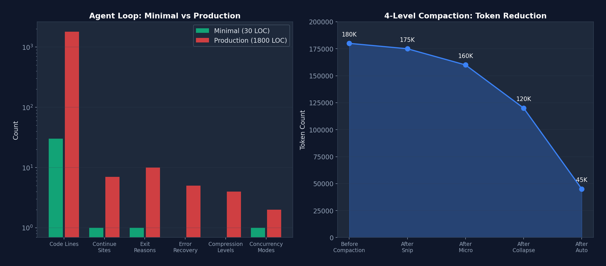
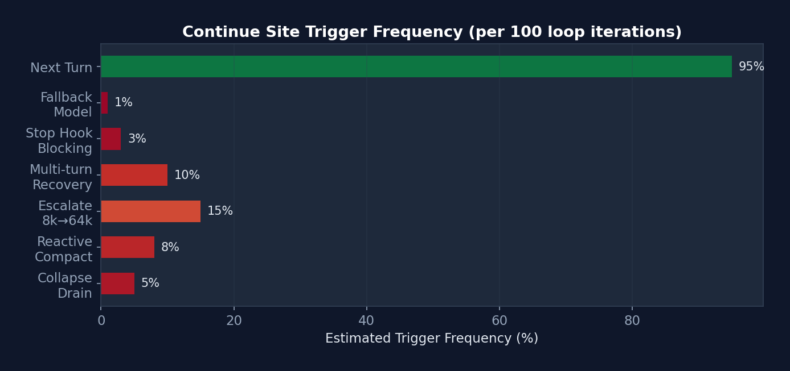
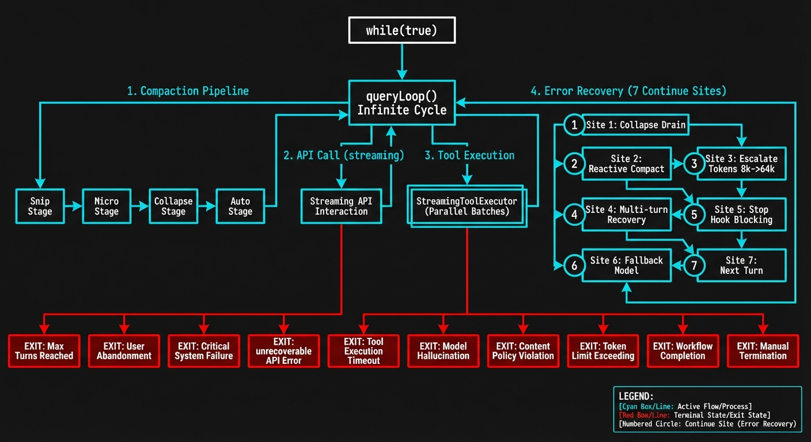

A Comprehensive Textbook on AI Agent Infrastructure Design
"The model is the agent. The code is the harness. Build great harnesses. The agent will do the rest."
本教程基于 Claude Code 源码（~512,664 行 TypeScript）的逆向工程与系统性分析，以教科书的体例深入剖析 AI Agent Harness 的每一个设计决策、工程取舍与实现细节。全文遵循学术写作规范，在代码分析之上构建理论框架，将零散的实现细节提炼为可复用的设计原则。
读者对象：AI 工程师、Agent 系统架构师、对 LLM 应用基础设施感兴趣的研究者。
前置知识：TypeScript 基础、LLM API 调用经验、基本的系统设计概念。
 图 0-1: Harness Engineering 架构全景 — LLM 被六层 Harness 基础设施环绕：工具系统（43+）、权限模型（5 种模式）、Hooks 系统（26 事件 x 4 类型）、沙盒（文件+网络+进程隔离）、上下文工程（CLAUDE.md + 记忆 + 四级压缩）、设置与配置（7 级层级）。
图 0-1: Harness Engineering 架构全景 — LLM 被六层 Harness 基础设施环绕：工具系统（43+）、权限模型（5 种模式）、Hooks 系统（26 事件 x 4 类型）、沙盒（文件+网络+进程隔离）、上下文工程（CLAUDE.md + 记忆 + 四级压缩）、设置与配置（7 级层级）。
目录
- 第一章：什么是 Harness Engineering？
- 第二章：Claude Code 架构全景
- 第三章：Agent Loop — Harness 的心脏
- 第四章：Tool System — Agent 的双手
- 第五章：Permission Model — 约束架构
- 第六章：Hooks System — 生命周期可扩展性
- 第七章：Sandbox & Security — 安全网
- 第八章：Context Engineering — 信息管理的艺术
- 第九章：Settings & Configuration — Harness 的可调性
- 第十章：MCP Integration — 扩展 Harness 的边界
- 第十一章：Sub-Agent System — 多智能体编排
- 第十二章：Skills & Plugins — 扩展生态
- 第十三章：构建你自己的 Harness — 实战指南
- 第十四章：高级模式与设计哲学
- 第十五章：从零构建 Mini Harness（Hands-on 实战）
- 第十六章：竞品对比分析
- 结语：从读者到构建者
- 参考文献
- 附录 A：Claude Code 源码文件索引
- 附录 B：参考资源
- 附录 C：ToolUseContext 完整类型定义
- 附录 D：13 条防护规则参考模型
第一章：什么是 Harness Engineering？
想象你要训练一匹野马。你不会直接骑上去——你会先搭建围栏、准备缰绳、铺好跑道。这些"基础设施"不是马本身，但没有它们，再好的马也只是一匹野马。
AI Agent 也是如此。模型（LLM）是那匹马——强大但未被驯化。Harness Engineering 就是搭围栏、做缰绳、铺跑道的工程学科。
1.1 定义
Harness Engineering（线束工程）是设计环境、约束、反馈循环和基础设施以使 AI Agent 在规模化场景下可靠运行的工程学科。
这个术语在 2026 年初由 OpenAI 工程团队正式提出。他们描述了内部系统"用超过一百万行代码，没有一行是人类写的"——工程师不再直接写代码，而是"设计让 AI Agent 可靠编写代码的系统"。
一个简单的类比帮助你理解：
┌─────────────────────────────────────────────────┐
│ │
│ Agent = Model (LLM) │
│ Harness = Everything Else │
│ │
│ ┌──────────┐ ┌────────────────────────┐ │
│ │ Claude │ ←── │ Tools, Permissions, │ │
│ │ Opus/ │ ──→ │ Hooks, Sandbox, │ │
│ │ Sonnet │ │ Memory, Settings, │ │
│ │ │ │ MCP, Skills, Agents │ │
│ └──────────┘ └────────────────────────┘ │
│ Model Harness │
│ │
└─────────────────────────────────────────────────┘
1.2 三大支柱
要理解 Harness Engineering，把它拆成三根柱子来看最清晰。你可以把它想象成盖房子：Context Engineering 是打地基（确保信息到位），Architectural Constraints 是承重墙（确保结构不塌），Entropy Management 是物业维护（确保房子不老化）。
mindmap
root((Harness Engineering))
Context Engineering
静态上下文
CLAUDE.md
AGENTS.md
设计文档
动态上下文
日志与指标
Git 状态
CI/CD 状态
上下文压缩
四级管道
按需加载
记忆系统
Architectural Constraints
权限模型
5 种模式
7 级规则层级
AI 分类器
工具约束
Schema 验证
并发安全标记
延迟加载
安全边界
沙盒隔离
硬编码拒绝
纵深防御
Entropy Management
定期清理
死代码检测
文档一致性
约束验证
依赖审计
模式强制
性能监控
覆盖率守卫
回归检测
 图 1-2: 三大支柱的工程时间分配 — Context Engineering 占据最大比例（45%），因为"Agent 看不到的信息等于不存在"；Architectural Constraints 次之（35%）；Entropy Management 占 20% 但对长期稳定性至关重要。
图 1-2: 三大支柱的工程时间分配 — Context Engineering 占据最大比例（45%），因为"Agent 看不到的信息等于不存在"；Architectural Constraints 次之（35%）；Entropy Management 占 20% 但对长期稳定性至关重要。
支柱一：Context Engineering（上下文工程）
管理信息的可访问性、结构和时机。关键技术包括：
- 静态上下文：仓库文档、CLAUDE.md/AGENTS.md 文件、设计文档
- 动态上下文：日志、指标、目录映射、CI/CD 状态
- 核心原则："Agent 无法在上下文中访问的信息不存在"
支柱二：Architectural Constraints（架构约束）
通过机械执行而非建议来建立边界：
- 依赖层级（Types → Config → Repo → Service → Runtime → UI）
- 确定性 Linter 执行自定义规则
- 基于 LLM 的审计员审查 Agent 合规性
- 结构性测试和 pre-commit hooks
反直觉的收益：约束解空间让 Agent 更高效，而非更低效——通过阻止无用探索。
支柱三：Entropy Management（熵管理）
定期清理 Agent 解决代码退化：
- 文档一致性验证
- 约束违规扫描
- 模式强制执行
- 依赖审计
1.3 Harness Engineering vs 相关学科
| 学科 | 关系 |
|---|---|
| Prompt Engineering | Context Engineering 的子集（单次交互 vs 系统） |
| ML Engineering | 独立学科；假设模型已部署 |
| Agent Engineering | 互补；Harness 工程师为 Agent 构建基础设施 |
| DevOps | 重叠的基础设施技能，应用于 AI 上下文 |
1.4 停下来想一想
在继续之前，试着回答这个问题：
如果你今天要构建一个 AI 编码助手，你会把 80% 的工程时间花在哪里——改进模型，还是改进模型周围的系统？
如果你的回答是"模型"，那么 Harness Engineering 会挑战你的直觉。LangChain 的案例证明，仅改变 Harness 就能在基准测试上提升 14 个百分点。模型是"给定的"，Harness 才是你能控制的。
1.5 定量证据：Harness 的投资回报率
在深入"为什么现在"之前，让我们用数据说话：
 图 1-1: Harness 优化 vs 模型优化的投资回报率对比 — 在 Terminal Bench 得分和开发周期缩短上，Harness 优化的收益远超模型优化，且所需工程时间仅为后者的十分之一。
图 1-1: Harness 优化 vs 模型优化的投资回报率对比 — 在 Terminal Bench 得分和开发周期缩短上，Harness 优化的收益远超模型优化，且所需工程时间仅为后者的十分之一。
| 指标 | 仅模型优化 | 仅 Harness 优化 | 两者结合 |
|---|---|---|---|
| Terminal Bench 2.0 得分 | +3-5% (模型升级) | +14% (LangChain 案例) | +18-20% |
| 开发周期缩短 | 微不足道 | 10x (OpenAI 百万行案例) | >10x |
| 工程师投入时间 | 数月（训练/微调） | 1-2 小时（Level 1 Harness） | 数月 |
| 可迁移性 | 模型特定 | 跨模型复用 | 部分复用 |
关键洞察：Harness 优化的投资回报率（ROI）远高于模型优化。一个精心设计的 CLAUDE.md 文件只需 30 分钟，但可以将 Agent 在特定项目上的表现提升 20-40%。相比之下，模型微调需要数周时间和大量计算资源，且只对特定任务有效。
1.6 为什么现在？
三个趋同因素催生了需求：
- 模型商品化 — 竞争优势从模型转向系统
- 生产部署 — Agent 从演示走向面向客户的可靠性要求
- 基准局限 — 标准指标无法衡量多小时、多步骤的 Agent 稳定性
实际影响：LangChain 仅修改 Harness 架构（不换模型），在 Terminal Bench 2.0 上从 52.8% 提升到 66.5%，从 Top 30 跃升至 Top 5。
1.5 实施层级
| 层级 | 范围 | 投入 | 内容 |
|---|---|---|---|
| Level 1 | 个人 | 1-2 小时 | CLAUDE.md + pre-commit hooks + 测试套件 |
| Level 2 | 小团队 | 1-2 天 | AGENTS.md 规范 + CI 约束 + 共享模板 |
| Level 3 | 组织 | 1-2 周 | 自定义中间件 + 可观测性 + 调度 Agent |
第二章：Claude Code 架构全景
在上一章我们建立了理论框架。从这一章开始，我们将用一个真实的、正在生产环境运行的系统来验证这些理论。这个系统就是 Claude Code——Anthropic 的官方 AI 编码助手 CLI，拥有超过 50 万行 TypeScript 代码，是目前最完整的生产级 Agent Harness 参考实现。
为什么选择 Claude Code？因为它不是一个教学项目——它是每天被数以万计的开发者使用的真实产品。它的每一个设计决策背后，都有真实的用户痛点和工程取舍。通过逆向工程它的架构，我们能学到"课本上不会写"的实战智慧。
2.1 技术栈
| 类别 | 技术 |
|---|---|
| Runtime | Bun（TypeScript 原生，高性能） |
| Language | TypeScript（严格模式） |
| UI Framework | React + Ink（终端组件） |
| CLI Parser | Commander.js（@commander-js/extra-typings） |
| Schema Validation | Zod v4 |
| Search Engine | ripgrep（通过 BashTool 调用） |
| API Client | @anthropic-ai/sdk |
| Protocols | MCP SDK, LSP |
| State Management | 自定义 Zustand-like Store + React Context |
| Telemetry | OpenTelemetry + gRPC |
| Feature Flags | GrowthBook + Bun bun:bundle |
| Auth | OAuth 2.0, JWT, macOS Keychain |
 图 2-1: Claude Code 各目录代码行数分布 — tools/ 和 utils/ 是最大的两个目录，合计占约 32% 的代码量，反映出工具系统和基础设施工具是 Harness 的核心。
图 2-1: Claude Code 各目录代码行数分布 — tools/ 和 utils/ 是最大的两个目录，合计占约 32% 的代码量，反映出工具系统和基础设施工具是 Harness 的核心。
 图 2-2: 各类别模块数量 — components（144）和 commands（101）数量最多，体现了 Claude Code 作为终端 UI 应用的特征。
图 2-2: 各类别模块数量 — components（144）和 commands（101）数量最多，体现了 Claude Code 作为终端 UI 应用的特征。
2.2 规模
- ~1,884 TypeScript/TSX 文件
- 512,664 行代码
- 43+ 工具
- 100+ Slash 命令
- 80+ React Hooks
- 144+ UI 组件
- 22+ 服务模块
- 26+ Hook 事件
2.3 目录结构
src/
├── main.tsx # 入口点，CLI 引导（803 KB）
├── query.ts # 核心 Agent 循环（68 KB）
├── QueryEngine.ts # LLM 查询引擎（46 KB）
├── Tool.ts # Tool 基础接口（29 KB）
├── tools.ts # Tool 注册表（25 KB）
├── Task.ts # 任务类型定义
├── commands.ts # 命令注册
│
├── tools/ # 43 个工具目录
│ ├── BashTool/ # Shell 命令执行
│ ├── FileReadTool/ # 文件读取
│ ├── FileWriteTool/ # 文件创建
│ ├── FileEditTool/ # 部分文件修改
│ ├── GlobTool/ # 文件模式匹配
│ ├── GrepTool/ # ripgrep 内容搜索
│ ├── AgentTool/ # 子 Agent 生成
│ ├── SkillTool/ # Skill 执行
│ ├── MCPTool/ # MCP 服务器调用
│ ├── WebFetchTool/ # URL 内容抓取
│ ├── WebSearchTool/ # 网页搜索
│ └── ... # 更多工具
│
├── commands/ # ~101 个命令目录
│ ├── commit/ # Git 提交
│ ├── review/ # 代码审查
│ ├── mcp/ # MCP 管理
│ ├── skills/ # Skill 管理
│ └── ...
│
├── components/ # 144+ React/Ink 终端组件
├── hooks/ # 80+ 自定义 React Hooks
├── services/ # 22 个服务子目录
│ ├── api/ # Anthropic API 客户端
│ ├── mcp/ # MCP 协议连接
│ ├── oauth/ # OAuth 认证
│ ├── lsp/ # 语言服务器协议
│ ├── compact/ # 对话压缩
│ ├── plugins/ # 插件加载
│ └── ...
│
├── utils/ # 33+ 子目录，100+ 文件
│ ├── permissions/ # 权限逻辑
│ ├── hooks.ts # Hook 执行引擎
│ ├── hooks/ # Hook 配置管理
│ ├── sandbox/ # 沙盒适配器
│ ├── settings/ # 设置管理
│ ├── bash/ # Shell 工具
│ ├── memdir/ # 持久记忆目录
│ └── ...
│
├── state/ # 应用状态管理
├── entrypoints/ # CLI/MCP/SDK 入口
├── bridge/ # IDE 双向通信
├── coordinator/ # 多 Agent 编排
├── skills/ # Skill 系统
├── plugins/ # 插件系统
├── memdir/ # 记忆目录系统
├── schemas/ # Zod 验证 Schema
├── types/ # 类型定义
└── constants/ # 应用常量
2.4 入口点流程
main.tsx → 并行预取（MDM设置 + Keychain + API预连接）
↓
Commander.js CLI 解析器初始化
↓
preAction Hook: init() → 遥测 → 插件 → 迁移 → 远程设置
↓
React/Ink 渲染器启动
↓
交互式 REPL/对话循环
设计哲学：Claude Code 的入口点 main.tsx（803 KB）采用延迟加载策略。重型模块（OpenTelemetry, gRPC, analytics）在需要时才加载，而关键路径（MDM 设置、Keychain）则并行预取，确保启动速度。
2.5 核心数据流全景图
┌─────────────────────────────────────────────────────────────────────┐
│ Claude Code 数据流全景 │
│ │
│ 用户输入 ──→ UserPromptSubmit Hook ──→ Slash Command 解析 │
│ │ │
│ v │
│ QueryEngine.submitMessage() │
│ │ │
│ ├─→ 系统提示构建: base + tools + CLAUDE.md + MCP + memory │
│ ├─→ 消息规范化: normalizeMessagesForAPI() │
│ │ ├─ 重排序 attachment 消息 │
│ │ ├─ 合并连续 user/assistant 消息 │
│ │ ├─ 剥离 PDF/图片错误的重复内容 │
│ │ ├─ 规范化工具名称（别名→正式名） │
│ │ └─ 工具搜索引用块处理 │
│ │ │
│ v │
│ queryLoop() [while(true)] │
│ │ │
│ ├─→ 压缩管道: snip → micro → collapse → auto │
│ ├─→ API 调用: deps.sample() [流式] │
│ │ │
│ ├─→ 工具执行: StreamingToolExecutor (并发) / runTools (顺序) │
│ │ │ │
│ │ ├─→ 工具分区: partitionToolCalls() │
│ │ │ ├─ isConcurrencySafe=true → 并发执行 │
│ │ │ └─ isConcurrencySafe=false → 串行执行 │
│ │ │ │
│ │ └─→ 每个工具: │
│ │ ├─ Zod schema 验证 │
│ │ ├─ tool.validateInput() │
│ │ ├─ PreToolUse Hook │
│ │ ├─ 权限检查 (rules → mode → classifier) │
│ │ ├─ Sandbox 包装 (BashTool) │
│ │ ├─ tool.call() [实际执行] │
│ │ └─ PostToolUse Hook │
│ │ │
│ ├─→ 错误恢复: 7 个 continue 站点 │
│ └─→ Stop Hook → 终止或继续 │
│ │
│ 终止 → SessionEnd Hook → 转录保存 → 退出 │
└─────────────────────────────────────────────────────────────────────┘
2.6 消息类型系统
Claude Code 定义了丰富的消息类型系统，每种类型在 Agent Loop 中有不同的处理路径：
// src/types/message.ts — 消息类型层次
type Message =
| UserMessage // 人类输入（或工具结果）
| AssistantMessage // 模型响应（文本 + 工具调用）
| AttachmentMessage // 记忆/资源附件
| SystemMessage // 系统消息
| SystemLocalCommandMessage // 本地工具结果（bash, read 等）
| ToolUseSummaryMessage // 压缩后的工具历史
| TombstoneMessage // 已删除消息标记
| ProgressMessage // 流式进度更新
消息规范化（normalizeMessagesForAPI）是一个复杂的管道，处理包括：
- 连续用户消息合并：Bedrock 不支持多个连续 user 消息，API 层面将它们合并
- PDF/图片错误内容剥离：如果上传的 PDF 太大触发错误，后续轮次中自动剥离该内容，防止重复发送
- 工具名称规范化：别名（如旧名称）映射到当前正式名称
- Tool Reference 处理：当 Tool Search 启用时保留引用块，禁用时剥离
- 虚拟消息过滤：REPL 内部工具调用的显示消息不发送给 API
第三章：Agent Loop — Harness 的心脏
如果 Harness 是一辆汽车，Agent Loop 就是它的发动机。不管你的座椅多豪华、安全气囊多先进，没有发动机车就不能跑。
本章是全书最重要的一章。我们将逐行拆解 Claude Code 的核心循环——
queryLoop()——看它如何用一个while(true)驱动整个 AI 编码助手。读完本章，你会对"Agent 是如何工作的"有一个从底层到顶层的完整理解。
Agent Loop 是整个 Harness 最核心的组件。Claude Code 的实现位于 src/query.ts 的 queryLoop() 函数。
3.1 基本架构：无限循环 + Async Generator
以下是 Claude Code 真实源码中 queryLoop 的签名和初始化（src/query.ts）：
// src/query.ts — 真实的函数签名
async function* queryLoop(
params: QueryParams,
consumedCommandUuids: string[],
): AsyncGenerator<
| StreamEvent
| RequestStartEvent
| Message
| TombstoneMessage
| ToolUseSummaryMessage,
Terminal
> {
// ===== 不可变参数 — 循环期间永不重新赋值 =====
const {
systemPrompt, userContext, systemContext,
canUseTool, fallbackModel, querySource,
maxTurns, skipCacheWrite,
} = params
const deps = params.deps ?? productionDeps()
// ===== 可变跨迭代状态 =====
// 循环体在每次迭代开始时解构此对象以保持裸名读取。
// Continue 站点写入 `state = { ... }` 而不是 9 个独立赋值。
let state: State = {
messages: params.messages,
toolUseContext: params.toolUseContext,
maxOutputTokensOverride: params.maxOutputTokensOverride,
autoCompactTracking: undefined,
stopHookActive: undefined,
maxOutputTokensRecoveryCount: 0,
hasAttemptedReactiveCompact: false,
turnCount: 1,
pendingToolUseSummary: undefined,
transition: undefined, // 为什么上次迭代 continue 了
}
// 预算跟踪跨压缩边界（循环局部，不在 State 上）
let taskBudgetRemaining: number | undefined = undefined
// 查询配置快照（一次性捕获环境/statsig/会话状态）
const config = buildQueryConfig()
// 记忆预取（使用 `using` 确保在生成器退出时清理）
using pendingMemoryPrefetch = startRelevantMemoryPrefetch(
state.messages, state.toolUseContext,
)
while (true) {
// ... 循环体（下文详解）
}
}
State 类型定义（这是循环的"骨架"）：
type State = {
messages: Message[]
toolUseContext: ToolUseContext
autoCompactTracking: AutoCompactTrackingState | undefined
maxOutputTokensRecoveryCount: number
hasAttemptedReactiveCompact: boolean
maxOutputTokensOverride: number | undefined
pendingToolUseSummary: Promise<ToolUseSummaryMessage | null> | undefined
stopHookActive: boolean | undefined
turnCount: number
transition: Continue | undefined // 上次迭代为何 continue
}
下面用状态图展示 queryLoop 的完整生命周期——每个状态对应循环中的一个阶段，每条边对应一个 transition reason：
stateDiagram-v2
[*] --> Compaction: 进入循环
Compaction --> APICall: 压缩完成
APICall --> ToolExecution: 有 tool_use 块
APICall --> StopHooks: 无 tool_use 块
APICall --> CollapseRetry: 413 错误
APICall --> ReactiveCompact: collapse 失败
APICall --> EscalateTokens: max_output_tokens
APICall --> MultiTurnRetry: 升级后仍截断
APICall --> FallbackModel: FallbackTriggeredError
CollapseRetry --> Compaction: continue site 1
ReactiveCompact --> Compaction: continue site 2
EscalateTokens --> Compaction: continue site 3
MultiTurnRetry --> Compaction: continue site 4
FallbackModel --> Compaction: continue site 6
ToolExecution --> Compaction: continue site 7\n（正常下一轮）
StopHooks --> [*]: 正常完成
StopHooks --> Compaction: blocking error\ncontinue site 5
StopHooks --> [*]: hook 阻止继续
ReactiveCompact --> [*]: 恢复失败
MultiTurnRetry --> [*]: 重试 3 次后耗尽
简化后的逻辑流（帮助理解）：
while (true) {
// 1. 解构状态
const { messages, toolUseContext, ... } = state;
// 2. 压缩管道
// 3. 构建系统提示 + 规范化消息
// 4. 调用 LLM API（流式）
// 5. 收集 tool_use 块
// 6. 错误恢复（7 个 continue 站点）
// 7. 工具执行
// 8. Stop Hook → 终止或继续
// 9. 更新状态 → continue
}
设计哲学：
- Async Generator：不是返回最终结果，而是
yield每一个中间事件（流式事件、消息、墓碑消息）。这使客户端可以在 API 调用完成前就开始渲染。 - 无限循环 + 显式退出：循环只在
return Terminal时退出。这比有限循环更灵活，因为很多恢复路径需要重新迭代。 - 单一 State 对象：每次迭代开始时解构 State，在 continue 站点整体重新赋值，维护伪不可变语义。
3.2 循环的七个 Continue 站点
Claude Code 的 queryLoop 有 7+ 个 continue 站点，每个对应不同的恢复场景：
┌─────────────────────────────────────────────────┐
│ queryLoop() │
│ │
│ ┌──────────────────────────────────────────┐ │
│ │ Continue Site 1: Proactive Compaction │ │
│ │ 触发: token 超过阈值 │ │
│ │ 动作: autocompact → 新消息 → continue │ │
│ └──────────────────────────────────────────┘ │
│ │
│ ┌──────────────────────────────────────────┐ │
│ │ Continue Site 2: Prompt Too Long │ │
│ │ 触发: API 返回 prompt-too-long 错误 │ │
│ │ 动作: context-collapse → reactive compact │ │
│ └──────────────────────────────────────────┘ │
│ │
│ ┌──────────────────────────────────────────┐ │
│ │ Continue Site 3: Max Output Tokens │ │
│ │ 触发: 模型输出截断 │ │
│ │ 动作: 升级 8k→64k → 多轮重试（最多3次） │ │
│ └──────────────────────────────────────────┘ │
│ │
│ ┌──────────────────────────────────────────┐ │
│ │ Continue Site 4: Fallback Model │ │
│ │ 触发: FallbackTriggeredError │ │
│ │ 动作: 切换模型 → 重试请求 │ │
│ └──────────────────────────────────────────┘ │
│ │
│ ┌──────────────────────────────────────────┐ │
│ │ Continue Site 5: Stop Hook Blocking │ │
│ │ 触发: 用户 Hook 要求额外轮次 │ │
│ │ 动作: 注入 Hook 消息 → continue │ │
│ └──────────────────────────────────────────┘ │
│ │
│ ┌──────────────────────────────────────────┐ │
│ │ Continue Site 6: Image/Media Errors │ │
│ │ 触发: ImageSizeError / ImageResizeError │ │
│ │ 动作: 反应式压缩（移除图片）→ continue │ │
│ └──────────────────────────────────────────┘ │
│ │
│ ┌──────────────────────────────────────────┐ │
│ │ Continue Site 7: Tool Execution │ │
│ │ 触发: 正常工具执行完成 │ │
│ │ 动作: 收集结果 → 更新状态 → continue │ │
│ └──────────────────────────────────────────┘ │
│ │
│ ┌──────────────────────────────────────────┐ │
│ │ return Terminal — 唯一的退出点 │ │
│ │ 条件: 无工具调用 + Stop Hook 不阻止 │ │
│ └──────────────────────────────────────────┘ │
└─────────────────────────────────────────────────┘
3.3 压缩管道（Compaction Pipeline）
上下文窗口是有限的——即使是 1M token 的窗口，在长对话中也会被填满。Claude Code 实现了一个四级压缩管道，这是它最精巧的子系统之一。
flowchart TD
subgraph Pipeline["压缩管道（每轮迭代执行）"]
direction TB
S["Level 1: Snip\n历史截断\n成本: 极低 | 延迟: ~0ms"]
MC["Level 2: Microcompact\n老化工具结果缩减\n成本: 低 | 延迟: ~1ms"]
CC["Level 3: Context-Collapse\n读时投射（不修改数组）\n成本: 中 | 延迟: ~5ms"]
AC["Level 4: Autocompact\nLLM 全对话摘要\n成本: 高 | 延迟: ~2s"]
end
S -->|"释放少量 token"| MC
MC -->|"边界消息延迟"| CC
CC -->|"如果仍超阈值"| AC
CC -->|"如果低于阈值"| Skip["跳过 Autocompact\n保留粒度上下文"]
classDef light fill:#dcfce7,stroke:#16a34a,color:#14532d
classDef medium fill:#fef9c3,stroke:#ca8a04,color:#713f12
classDef heavy fill:#fee2e2,stroke:#dc2626,color:#7f1d1d
classDef skip fill:#f3f4f6,stroke:#6b7280,color:#374151
class S,MC light
class CC medium
class AC heavy
class Skip skip
源码批注分析：关于 Microcompact 和 Snip 的执行顺序，源码注释道："Apply snip before microcompact (both may run — they are not mutually exclusive)... snipTokensFreed is plumbed to autocompact: snip's threshold check must reflect what snip removed." 这揭示了一个微妙的数据流依赖：Snip 释放的 token 数必须传递给 Autocompact 的阈值检查，否则 Autocompact 会低估已释放的空间，导致不必要的全对话摘要。
关于 Context-Collapse，注释道："Nothing is yielded — the collapsed view is a read-time projection... summary messages live in the collapse store, not the REPL array." 这意味着 Level 3 不修改任何数据结构——它只是改变了"读取方式"。这种设计使得 collapse 可以跨轮次持久化，而且完全可逆。
每级独立运作，但有严格的执行顺序约束：
┌────────────────────────────────────────────────────────┐
│ Compaction Pipeline │
│ │
│ Level 1: Snip Compact（每轮） │
│ ├─ Feature-gated 历史截断 │
│ ├─ 追踪释放的 token 数 │
│ └─ 最轻量，几乎无延迟 │
│ │
│ Level 2: Microcompact（每轮） │
│ ├─ 将 3 轮前的工具结果替换为 "[Previous: used {tool}]" │
│ ├─ 缓存压缩结果 │
│ └─ 延迟边界消息直到 API 响应（知道 cache_deleted_input） │
│ │
│ Level 3: Context-Collapse（读时投射） │
│ ├─ 不修改消息数组，而是在读取时投射 │
│ ├─ 按粒度排空可折叠上下文 │
│ └─ 低成本，渐进式 │
│ │
│ Level 4: Autocompact（>50k tokens 时触发） │
│ ├─ 保存完整转录到磁盘 │
│ ├─ LLM 总结所有消息 │
│ ├─ 用摘要替换所有消息 │
│ └─ 最重量级，但释放最多空间 │
│ │
│ 执行顺序: snip → micro → context-collapse → auto │
│ 各级互不排斥，可组合运行 │
└────────────────────────────────────────────────────────┘
设计哲学：
- 渐进式：先尝试轻量操作，只在必要时升级到重量操作
- 边界延迟：Microcompact 的边界消息延迟到 API 响应后，因为此时才知道缓存命中情况
- 预算追踪跨压缩边界：
taskBudgetRemaining在压缩前捕获最终窗口，累计跨多次压缩
3.4 工具执行编排
Claude Code 有两种工具执行模式，实际生产中两者共存：
模式 1: StreamingToolExecutor（默认 — 边流式边执行）
// src/services/tools/toolOrchestration.ts — 真实代码
export class StreamingToolExecutor {
private tools: TrackedTool[] = []
private toolUseContext: ToolUseContext
private hasErrored = false
// 子 AbortController：当一个 Bash 工具出错时，
// 兄弟子进程立即死亡，但不中止父级查询
private siblingAbortController: AbortController
private discarded = false
addTool(block: ToolUseBlock, assistantMessage: AssistantMessage): void {
const toolDefinition = findToolByName(this.toolDefinitions, block.name)
if (!toolDefinition) {
// 工具不存在 → 立即创建错误结果
this.tools.push({
id: block.id, block, assistantMessage,
status: 'completed',
isConcurrencySafe: true,
pendingProgress: [],
results: [createUserMessage({
content: [{
type: 'tool_result',
content: `<tool_use_error>Error: No such tool: ${block.name}</tool_use_error>`,
is_error: true,
tool_use_id: block.id,
}],
})],
})
return
}
// 解析输入并判断是否可并发
const parsedInput = toolDefinition.inputSchema.safeParse(block.input)
const isConcurrencySafe = parsedInput?.success
? Boolean(toolDefinition.isConcurrencySafe(parsedInput.data))
: false
this.tools.push({
id: block.id, block, assistantMessage,
status: 'queued', isConcurrencySafe,
pendingProgress: [],
})
void this.processQueue() // 立即开始处理
}
// 当流式回退发生时，丢弃所有待处理和进行中的工具
discard(): void { this.discarded = true }
}
关键设计：addTool() 在模型流式生成过程中被调用。每当识别到一个完整的 tool_use JSON 块，该工具立即排队执行。模型还在生成第二个工具调用时，第一个已经在运行了。
模式 2: runTools()（回退 — 分区后执行）
// src/services/tools/toolOrchestration.ts — 真实代码
export async function* runTools(
toolUseMessages: ToolUseBlock[],
assistantMessages: AssistantMessage[],
canUseTool: CanUseToolFn,
toolUseContext: ToolUseContext,
): AsyncGenerator<MessageUpdate, void> {
let currentContext = toolUseContext
// 核心设计：工具分区
for (const { isConcurrencySafe, blocks } of partitionToolCalls(
toolUseMessages, currentContext,
)) {
if (isConcurrencySafe) {
// ===== 只读批次：并发执行 =====
const queuedContextModifiers: Record<string, ((ctx) => ctx)[]> = {}
for await (const update of runToolsConcurrently(blocks, ...)) {
if (update.contextModifier) {
// 收集上下文修改器，延迟应用
queuedContextModifiers[update.contextModifier.toolUseID]
?.push(update.contextModifier.modifyContext)
}
yield { message: update.message, newContext: currentContext }
}
// 批次完成后，按顺序应用所有上下文修改
for (const block of blocks) {
for (const modifier of queuedContextModifiers[block.id] ?? []) {
currentContext = modifier(currentContext)
}
}
} else {
// ===== 写入批次：串行执行 =====
for await (const update of runToolsSerially(blocks, ...)) {
if (update.newContext) currentContext = update.newContext
yield { message: update.message, newContext: currentContext }
}
}
}
}
工具分区算法 (partitionToolCalls)：
输入: [Read("a.ts"), Read("b.ts"), Write("c.ts"), Read("d.ts")]
分区结果:
批次 1: { isConcurrencySafe: true, blocks: [Read("a.ts"), Read("b.ts")] }
批次 2: { isConcurrencySafe: false, blocks: [Write("c.ts")] }
批次 3: { isConcurrencySafe: true, blocks: [Read("d.ts")] }
执行顺序: 批次 1 并发 → 批次 2 串行 → 批次 3 并发
设计哲学：只读工具（Read, Glob, Grep）天然可并发——它们不修改状态。写入工具（Write, Edit, Bash）必须串行，因为它们可能依赖前一个工具的副作用。分区算法将连续的同类工具分组，在安全性和性能之间取得最优平衡。上下文修改器（contextModifier）被收集并延迟应用，确保并发执行期间的上下文一致性。
为什么这很重要？ 假设 Agent 要读取 10 个文件来回答一个架构问题。如果没有工具分区，这 10 个 Read 会一个接一个串行执行——每个可能需要几十毫秒。有了分区，它们并发执行，总时间约等于最慢的那一个。在实际使用中，这让"读取代码库"这类操作从秒级降到毫秒级。这种优化对用户来说是"感觉上的流畅"——你不需要知道原理，但你会注意到它快。
3.5 错误恢复级联（含真实源码）
Claude Code 对可恢复错误实现了级联恢复策略。以下是 src/query.ts 中的真实代码：
Prompt Too Long (413) 恢复
// src/query.ts — 真实的 413 恢复代码
if (isWithheld413) {
// 第 1 步: 排空 context-collapse 队列
// 只有在上次 transition 不是 collapse_drain_retry 时才尝试
// （如果已经排空过但仍然 413，跳过直接进入 reactive compact）
if (feature('CONTEXT_COLLAPSE') && contextCollapse
&& state.transition?.reason !== 'collapse_drain_retry') {
const drained = contextCollapse.recoverFromOverflow(messagesForQuery, querySource)
if (drained.committed > 0) {
state = { ...state,
messages: drained.messages,
transition: { reason: 'collapse_drain_retry', committed: drained.committed },
}
continue // ← Continue Site 1
}
}
}
// 第 2 步: Reactive Compact（完整摘要）
if ((isWithheld413 || isWithheldMedia) && reactiveCompact) {
const compacted = await reactiveCompact.tryReactiveCompact({
hasAttempted: hasAttemptedReactiveCompact, // 防止无限循环
querySource,
aborted: toolUseContext.abortController.signal.aborted,
messages: messagesForQuery,
cacheSafeParams: { systemPrompt, userContext, systemContext, ... },
})
if (compacted) {
// 预算跟踪：捕获压缩前的最终上下文窗口
if (params.taskBudget) {
const preCompactContext = finalContextTokensFromLastResponse(messagesForQuery)
taskBudgetRemaining = Math.max(0,
(taskBudgetRemaining ?? params.taskBudget.total) - preCompactContext)
}
const postCompactMessages = buildPostCompactMessages(compacted)
for (const msg of postCompactMessages) { yield msg }
state = { ...state,
messages: postCompactMessages,
hasAttemptedReactiveCompact: true,
transition: { reason: 'reactive_compact_retry' },
}
continue // ← Continue Site 2
}
// 第 3 步: 所有恢复失败 → 向用户报告
// 关键：不要进入 Stop Hooks！模型从未产生有效响应，
// Stop Hooks 无法有意义地评估。运行 Stop Hooks 会造成死亡螺旋：
// error → hook blocking → retry → error → ...
yield lastMessage
void executeStopFailureHooks(lastMessage, toolUseContext)
return { reason: 'prompt_too_long' }
}
Max Output Tokens 恢复
// src/query.ts — 真实的 max_output_tokens 恢复代码
if (isWithheldMaxOutputTokens(lastMessage)) {
// 升级重试：如果使用了默认的 8k 上限，升级到 64k 重试 **同一请求**
// 无 meta 消息，无多轮交互
const capEnabled = getFeatureValue_CACHED_MAY_BE_STALE('tengu_otk_slot_v1', false)
if (capEnabled && maxOutputTokensOverride === undefined
&& !process.env.CLAUDE_CODE_MAX_OUTPUT_TOKENS) {
logEvent('tengu_max_tokens_escalate', { escalatedTo: ESCALATED_MAX_TOKENS })
state = { ...state,
maxOutputTokensOverride: ESCALATED_MAX_TOKENS, // 64k
transition: { reason: 'max_output_tokens_escalate' },
}
continue // ← Continue Site 3
}
// 多轮恢复：注入恢复消息，要求模型从断点继续
if (maxOutputTokensRecoveryCount < MAX_OUTPUT_TOKENS_RECOVERY_LIMIT) { // 限制 3 次
const recoveryMessage = createUserMessage({
content: `Output token limit hit. Resume directly — no apology, no recap. ` +
`Pick up mid-thought if that is where the cut happened. ` +
`Break remaining work into smaller pieces.`,
isMeta: true,
})
state = { ...state,
messages: [...messagesForQuery, ...assistantMessages, recoveryMessage],
maxOutputTokensRecoveryCount: maxOutputTokensRecoveryCount + 1,
transition: {
reason: 'max_output_tokens_recovery',
attempt: maxOutputTokensRecoveryCount + 1,
},
}
continue // ← Continue Site 4
}
// 恢复耗尽 → 展示被截断的错误
yield lastMessage
}
Stop Hook 恢复
// src/query.ts — Stop Hook 阻止后的恢复
const stopHookResult = yield* handleStopHooks(
messagesForQuery, assistantMessages, systemPrompt,
userContext, systemContext, toolUseContext, querySource, stopHookActive,
)
if (stopHookResult.preventContinuation) {
return { reason: 'stop_hook_prevented' }
}
if (stopHookResult.blockingErrors.length > 0) {
state = { ...state,
messages: [...messagesForQuery, ...assistantMessages, ...stopHookResult.blockingErrors],
maxOutputTokensRecoveryCount: 0,
// 关键：保留 hasAttemptedReactiveCompact 标志！
// 如果 compact 已经运行但无法恢复 prompt-too-long，
// 重置此标志会导致无限循环：
// compact → 仍然太长 → error → stop hook → compact → ...
hasAttemptedReactiveCompact,
stopHookActive: true,
transition: { reason: 'stop_hook_blocking' },
}
continue // ← Continue Site 5
}
所有终止原因
// query.ts 中的 10 种终止原因
return { reason: 'completed' } // 正常完成（无工具调用 + Stop Hook 不阻止）
return { reason: 'blocking_limit' } // 硬性 token 限制
return { reason: 'stop_hook_prevented' } // Stop Hook 阻止继续
return { reason: 'aborted_streaming' } // 用户中断（模型响应中）
return { reason: 'aborted_tools' } // 用户中断（工具执行中）
return { reason: 'hook_stopped' } // Hook 附件停止继续
return { reason: 'max_turns', turnCount }// 达到最大轮次限制
return { reason: 'prompt_too_long' } // 413 恢复耗尽
return { reason: 'image_error' } // 图片/PDF 太大
return { reason: 'model_error', error } // 意外异常
源码批注深度分析：
以下洞察来自 Claude Code 源码中的内部开发者注释，揭示了生产环境中的真实工程挑战：
1. 错误扣留（Error Withholding）策略
源码注释写道："yielding early would leak intermediate errors to consumers like cowork/desktop that terminate on any error field, even though recovery is still running."
这意味着 queryLoop 不是在发现错误时立即 yield，而是扣留错误（withheld），等恢复流程走完后才决定是否展示。这防止了下游消费者（IDE 扩展、桌面应用）看到中间态的错误就提前终止。
2. 压缩边界的预算跟踪
源码注释写道："remaining is undefined until first compact fires — before compact the server sees full history and counts down from {total} itself (see api/api/sampling/prompt/renderer.py:292); after compact, server only sees summary and would under-count spend."
这揭示了一个精妙的服务端-客户端协同设计：压缩前，服务端能看到完整历史并自己计算预算消耗；压缩后，服务端只能看到摘要，所以客户端必须告诉服务端"你看不到的那部分消耗了多少"。
3. hasAttemptedReactiveCompact 不重置的原因
注意 Stop Hook 恢复中 hasAttemptedReactiveCompact 标志被保留而非重置。源码注释解释：如果 compact 已经运行但无法恢复 prompt-too-long，重置此标志会导致无限循环：compact → 仍然太长 → error → stop hook → compact → …。这是一个真实的生产 bug 修复。
4. 记忆预取的 using 语义
using pendingMemoryPrefetch = startRelevantMemoryPrefetch(...) 使用了 TC39 的 Explicit Resource Management 提案（using 关键字）。源码注释道："Fired once per user turn — the prompt is invariant across loop iterations, so per-iteration firing would ask sideQuery the same question N times." using 确保在生成器退出（正常或异常）时自动清理预取资源。
教学要点：这些细节揭示了一个核心原则——生产级 Agent Loop 的复杂性不在于"循环本身"，而在于"循环失败时如何优雅恢复"。一个 30 行的 while(true) 就能实现基本的 Agent Loop，但处理好所有边界情况需要 1800+ 行。这中间的差距就是 Harness Engineering 的全部价值。
3.6 停下来想一想
读完 Agent Loop，试着回答：
- 为什么 queryLoop 用
while(true)而不是递归？（提示：考虑内存和栈深度）- 为什么压缩管道有 4 级而不是 1 级？（提示：考虑成本和延迟的权衡）
- 如果你要给循环添加一个新的恢复路径（比如"API 密钥过期"），你需要修改哪些地方？
这些问题没有标准答案，但思考它们会帮助你理解"为什么"而不仅仅是"怎么做"。

图 3-2: (左) 最小实现 vs 生产实现的复杂性对比（对数刻度）— 代码行数增长 60 倍，但每个维度的增长都对应真实的生产需求。(右) 四级压缩管道的 Token 释放效率 — 从 180K 逐级降至 45K。
图 3-3: 7 个 continue 站点的触发频率估计 — "Next Turn"（正常推进）占 95%，错误恢复站点合计约 5%，但正是这 5% 的代码（约 500 行）防止了会话中断和成本失控。
图 3-1: queryLoop() 状态机 — 展示 7 个 continue 站点、4 级压缩管道、StreamingToolExecutor 并行执行和 10 种终止原因的完整流转。3.7 定量分析：Agent Loop 的复杂性度量
为了量化"最小 Agent Loop"和"生产 Agent Loop"之间的差距，我们对 src/query.ts 进行了代码度量分析：
| 度量指标 | 最小实现 (s01) | Claude Code 生产实现 |
|---|---|---|
| 代码行数 | 30 行 | 1,800+ 行 |
| Continue 站点 | 1 个 | 7 个 |
| 终止原因 | 1 个 (completed) | 10 个 |
| 错误恢复路径 | 0 个 | 5 个级联恢复 |
| 压缩策略 | 0 级 | 4 级管道 |
| 并发模式 | 串行 | 2 种 (Streaming + Sequential) |
| 状态字段 | 1 个 (messages) | 10 个 (State 类型) |
| Analytics 埋点 | 0 个 | 15+ 个 |
| Feature Gates | 0 个 | 8+ 个 |
复杂性增长分析：从 30 行到 1,800 行是 60 倍的增长。但这不是"过度工程"——每一行都对应一个真实的生产问题。例如： -
hasAttemptedReactiveCompact标志只有 1 行，但它防止了一个会消耗数千美元 API 费用的无限循环 bug。 -taskBudgetRemaining跟踪逻辑约 20 行，但它是唯一能在压缩边界后正确计算 Token 消耗的机制。 - StreamingToolExecutor 约 200 行，但它将多工具执行延迟从 O(n) 降到 O(1)（最慢工具的时间）。
3.8 Agent Loop 的设计哲学总结
- 弹性优于刚性：7+ 个 continue 站点允许从几乎任何错误中恢复
- 渐进式降级：每种错误先尝试最轻量的恢复，逐步升级
- 流式优先：Async Generator 使每个中间状态都可观察
- 状态显式化：单一 State 对象，无隐式全局状态
- 可观测性内建：每个恢复点都有 analytics 和 profiling
第四章：Tool System — Agent 的双手
Agent Loop 是发动机，那工具系统就是方向盘和油门。发动机再强大，如果不能操控方向、调节速度，车也到不了目的地。
在 Claude Code 中，模型（LLM）本身不能读文件、不能运行命令、不能搜索代码。它唯一能做的就是生成文本。但通过工具系统，这些文本被翻译成真实的操作——读一个文件、编辑一行代码、运行一个测试。
本章我们来看 Claude Code 如何设计一个 43+ 工具的系统，每个工具既是独立的、又是统一管理的。这套设计模式你可以直接复用到自己的 Agent 项目中。
工具系统是 Harness 中 Agent 与外部世界交互的唯一通道。Claude Code 实现了一个 43+ 工具的系统，每个工具都是自包含模块。
4.1 Tool 接口定义
位于 src/Tool.ts，这是所有工具的基础类型：
type Tool<
Input extends AnyObject = AnyObject,
Output = unknown,
P extends ToolProgressData = ToolProgressData,
> = {
// ===== 核心标识 =====
name: string; // 工具名称（主标识符）
aliases?: string[]; // 别名（向后兼容）
userFacingName(): string; // 显示名称
// ===== Schema & 验证 =====
inputSchema: ZodType<Input>; // Zod 输入验证
inputJSONSchema?: JSONSchema; // 可选 JSON Schema（MCP 工具）
outputSchema?: ZodType<Output>; // 可选输出类型
validateInput(input): Promise<ValidationResult>;
// ===== 执行 =====
call(
args: Input,
context: ToolUseContext,
canUseTool: CanUseTool,
parentMessage: AssistantMessage,
progressCallback?: ProgressCallback<P>,
): Promise<ToolResult<Output>>;
// ===== 权限 & 安全 =====
checkPermissions(args, context): Promise<PermissionDecision>;
isConcurrencySafe(args): boolean; // 能否并行执行
isDestructive(args): boolean; // 不可逆操作？
isReadOnly(): boolean; // 只读操作？
preparePermissionMatcher(args): string; // Hook 模式匹配
// ===== 行为 =====
isEnabled(): boolean; // 特性门控检查
interruptBehavior(): 'cancel' | 'block';
requiresUserInteraction(): boolean;
// ===== 渲染 =====
renderToolUseMessage(args): ReactElement;
renderToolResultMessage(result): ReactElement;
renderToolUseProgressMessage(progress): ReactElement;
// ===== 搜索 & 折叠 =====
searchHint: string; // ToolSearch 的 3-10 词关键词
shouldDefer: boolean; // 延迟加载
alwaysLoad: boolean; // 永不延迟
// ===== 描述（动态生成）=====
description(isNonInteractive?: boolean): string;
prompt(context): string; // 系统提示片段
};
设计哲学：
- 自描述：每个工具携带自己的 Schema、描述、权限逻辑和渲染函数
- 双 Schema 支持：Zod（内部验证） + JSON Schema（MCP 互操作）
- 动态描述：
description()接收交互模式参数，非交互模式下可省略UI相关说明 - 延迟加载：
shouldDefer让不常用工具在第一轮不加载到模型上下文，节省 token
初学者常见误区：很多人设计工具系统时只关注
call()方法——"工具能做什么"。但在生产环境中，权限检查、输入验证、进度渲染占了工具代码的 80%。一个好的工具接口不只是"执行"，而是"安全地、可观测地、可中断地执行"。
4.2 工具注册表
位于 src/tools.ts：
// 唯一的工具真实来源
function getAllBaseTools(): Tool[] {
return [
// === 始终加载 ===
AgentTool,
TaskOutputTool,
BashTool,
FileReadTool,
FileEditTool,
FileWriteTool,
WebFetchTool,
WebSearchTool,
AskUserQuestionTool,
SkillTool,
// ...更多始终可用的工具
// === 特性门控 ===
...(feature('PROACTIVE') ? [SleepTool] : []),
...(feature('AGENT_TRIGGERS') ? [ScheduleCronTool] : []),
...(feature('COORDINATOR_MODE') ? [TeamCreateTool, TeamDeleteTool] : []),
...(isReplModeEnabled() ? [REPLTool] : []),
// ...更多条件工具
];
}
Dead Code Elimination（死代码消除）：
// Bun 的 bun:bundle 在编译时评估 feature() 调用
// 如果 feature('PROACTIVE') 编译为 false:
...(false ? [SleepTool] : [])
// → SleepTool 的全部代码被 tree-shake 移除
// 包括其引用的所有字符串和依赖
这是 Claude Code 的一个关键设计模式：编译时特性门控。外部发行版可以通过设置 feature flags 来移除整个子系统，而不需要手动删除代码。
4.3 工具池组装
function assembleToolPool(builtInTools: Tool[], mcpTools: Tool[]): Tool[] {
// 1. 过滤被 deny 规则禁止的 MCP 工具
const filteredMcp = mcpTools.filter(t => !getDenyRuleForTool(t));
// 2. 分别排序（保持 prompt cache 稳定性）
const sortedBuiltIn = sortBy(builtInTools, t => t.name);
const sortedMcp = sortBy(filteredMcp, t => t.name);
// 3. 连接：内置工具在前（作为缓存前缀）
const combined = [...sortedBuiltIn, ...sortedMcp];
// 4. 去重（内置优先）
return uniqBy(combined, t => t.name);
}
Cache Stability（缓存稳定性）设计：
内置工具按名称排序后形成稳定的缓存前缀。当 MCP 工具增减时，前缀不变，Anthropic API 的 prompt cache 不会失效。这是一个微妙但重要的性能优化。
4.4 工具执行生命周期
 图 4-1: 工具执行管道的 7 步流程 — 从 Zod Schema 验证到 PostToolUse Hook，每一步都可能改变工具的行为或阻止执行。
图 4-1: 工具执行管道的 7 步流程 — 从 Zod Schema 验证到 PostToolUse Hook，每一步都可能改变工具的行为或阻止执行。
用下面的序列图理解一个工具从请求到执行的完整路径——注意 Hook 如何在关键节点介入：
sequenceDiagram
participant M as Model
participant V as Validator
participant PH as PreToolUse Hook
participant P as Permission Engine
participant S as Sandbox
participant T as Tool.call()
participant AH as PostToolUse Hook
M->>V: tool_use block
V->>V: Zod Schema 验证
alt 验证失败
V-->>M: 格式错误消息
end
V->>V: tool.validateInput()
alt 验证失败
V-->>M: 业务逻辑错误
end
V->>PH: 输入 JSON
PH->>PH: 条件匹配 (if 字段)
alt Hook 阻止
PH-->>M: blocking error
else Hook 修改输入
PH->>P: updatedInput
else Hook 批准
PH->>P: allow (但不绕过 deny 规则)
end
P->>P: deny规则 → ask规则 → 模式检查
alt 权限拒绝
P-->>M: 拒绝消息 + 建议
end
P->>S: 命令包装 (仅 BashTool)
S->>S: wrapWithSandbox()
S->>T: 沙盒化命令
T->>T: 实际执行
T->>AH: 执行结果
AH->>AH: 审计日志 / 输出修改
AH-->>M: 最终 tool_result
下面用传统流程图展示同样的过程：
用户/模型请求工具调用
│
v
┌─────────────────────────┐
│ 1. validateInput() │ 结构验证（必填字段、范围）
│ 使用 Zod Schema │
└────────┬────────────────┘
│ 通过
v
┌─────────────────────────┐
│ 2. checkPermissions() │ 工具特定的权限逻辑
│ 返回 allow/ask/deny │
└────────┬────────────────┘
│ 未被拒绝
v
┌─────────────────────────┐
│ 3. Rule-Based Perms │ 设置中的 allow/deny/ask 规则
│ checkRuleBasedPerms() │
└────────┬────────────────┘
│ 未被拒绝
v
┌─────────────────────────┐
│ 4. PreToolUse Hooks │ 用户定义的 Hook
│ 可批准或阻止 │
└────────┬────────────────┘
│ 未被阻止
v
┌─────────────────────────┐
│ 5. User Prompt/Classifier│ 最终审批（或自动分类器）
│ auto 模式：YOLO 分类器│
└────────┬────────────────┘
│ 批准
v
┌─────────────────────────┐
│ 6. call() │ 实际执行工具
│ 返回 ToolResult │
└────────┬────────────────┘
│
v
┌─────────────────────────┐
│ 7. PostToolUse Hooks │ 执行后回调
│ 审计日志、通知等 │
└─────────────────────────┘
4.5 工具执行管道（含 Hook 集成的真实代码）
工具执行不仅仅是调用 tool.call()——它是一个多步管道，每一步都可能改变行为：
// src/services/tools/toolExecution.ts — 真实的执行管道
async function checkPermissionsAndCallTool(
tool: Tool,
toolUseID: string,
input: Record<string, unknown>,
toolUseContext: ToolUseContext,
canUseTool: CanUseToolFn,
assistantMessage: AssistantMessage,
onToolProgress: (progress: ToolProgress) => void,
): Promise<MessageUpdate[]> {
// ===== 步骤 1: Zod Schema 验证 =====
const parsedInput = tool.inputSchema.safeParse(input)
if (!parsedInput.success) {
return [{ message: createUserMessage({
content: formatZodValidationError(tool.name, parsedInput.error),
}) }]
}
// ===== 步骤 2: 工具特定验证 =====
const isValidCall = await tool.validateInput?.(parsedInput.data, toolUseContext)
if (isValidCall?.result === false) {
return [{ message: createUserMessage({
content: isValidCall.message,
}) }]
}
// ===== 步骤 3: PreToolUse Hook =====
// Hook 可以：批准、阻止、修改输入、注入上下文
let processedInput = parsedInput.data
let hookPermissionResult: PermissionResult | undefined
for await (const result of runPreToolUseHooks(...)) {
switch (result.type) {
case 'hookPermissionResult':
hookPermissionResult = result.hookPermissionResult
break
case 'hookUpdatedInput':
processedInput = result.updatedInput // Hook 修改了输入！
break
}
}
// ===== 步骤 4: 权限解析（Hook + Rules 交互）=====
// 关键设计：Hook 的 'allow' 不绕过 settings.json 的 deny/ask 规则
const { decision, input: callInput } = await resolveHookPermissionDecision(
hookPermissionResult, tool, processedInput,
toolUseContext, canUseTool, assistantMessage, toolUseID,
)
if (decision.behavior !== 'allow') {
return [/* 权限被拒绝的消息 */]
}
// ===== 步骤 5: 实际执行工具 =====
let toolResult = await tool.call(
callInput, toolUseContext, canUseTool,
assistantMessage, onToolProgress,
)
// ===== 步骤 6: PostToolUse Hook =====
// Hook 可以：修改 MCP 工具输出、注入额外上下文
for await (const result of runPostToolUseHooks(...)) {
if (result.updatedMCPToolOutput) {
toolResult = { ...toolResult, data: result.updatedMCPToolOutput }
}
}
// ===== 步骤 7: 转换为 API 格式并返回 =====
return resultingMessages
}
Hook 权限决策解析（这是最微妙的部分）：
// src/services/tools/toolHooks.ts — 真实代码
export async function resolveHookPermissionDecision(
hookPermissionResult, tool, input, toolUseContext,
canUseTool, assistantMessage, toolUseID,
) {
if (hookPermissionResult?.behavior === 'allow') {
// Hook 说"允许"——但这不是最终判决！
// deny/ask 规则仍然适用（安全不可变量）
// 如果工具需要用户交互，且 Hook 提供了 updatedInput，
// 那么 Hook 就是"用户交互"（如 headless 包装器）
const interactionSatisfied =
tool.requiresUserInteraction?.() &&
hookPermissionResult.updatedInput !== undefined
// 即使 Hook 允许，仍检查规则
const ruleCheck = await checkRuleBasedPermissions(tool, input, toolUseContext)
if (ruleCheck?.behavior === 'deny') {
// Deny 规则覆盖 Hook 的 allow！
return { decision: ruleCheck, input }
}
if (ruleCheck?.behavior === 'ask') {
// Ask 规则仍需要对话框
return { decision: await canUseTool(...), input }
}
// 无规则阻止 → Hook 的 allow 生效
return { decision: hookPermissionResult, input }
}
// ... deny 和 ask 处理
}
核心安全不变量：deny > settings rules > hook allow。即使 Hook 批准了操作，settings.json 中的 deny 规则仍然阻止它。这防止了恶意 Hook 绕过安全策略。
为什么 Hook allow 不能绕过 deny 规则？ 这是一个真实的安全考量。想象你安装了一个第三方 MCP 服务器，它提供了一个 PreToolUse Hook，对所有操作返回
allow。如果 Hook allow 能绕过 deny 规则，这个第三方代码就获得了超越你安全策略的权限——它可以让 Agent 执行你明确禁止的操作。Claude Code 的设计保证了：你在 settings.json 中写的 deny 规则是不可绕过的底线，无论有什么 Hook 介入。
4.6 FileEditTool 字符串替换算法
FileEditTool 的核心算法值得单独分析——它处理了智能引号匹配，这是一个真实的工程挑战：
// src/tools/FileEditTool/utils.ts — 真实代码
// 问题：模型有时生成 "curly quotes"（智能引号）
// 但文件中是 "straight quotes"（直引号），或反之
const LEFT_DOUBLE_CURLY_QUOTE = '\u201C' // "
const RIGHT_DOUBLE_CURLY_QUOTE = '\u201D' // "
function normalizeQuotes(str: string): string {
return str
.replaceAll('\u2018', "'") // ' → '
.replaceAll('\u2019', "'") // ' → '
.replaceAll('\u201C', '"') // " → "
.replaceAll('\u201D', '"') // " → "
}
// 三阶段查找算法
function findActualString(fileContent: string, searchString: string): string | null {
// 阶段 1: 精确匹配
if (fileContent.includes(searchString)) return searchString
// 阶段 2: 引号规范化匹配
const normalizedSearch = normalizeQuotes(searchString)
const normalizedFile = normalizeQuotes(fileContent)
const searchIndex = normalizedFile.indexOf(normalizedSearch)
if (searchIndex !== -1) {
// 返回文件中的 **原始** 字符串（保留原始引号风格）
return fileContent.substring(searchIndex, searchIndex + searchString.length)
}
return null
}
// 替换算法
function applyEditToFile(
originalContent: string,
oldString: string,
newString: string,
replaceAll: boolean = false,
): string {
const f = replaceAll
? (content, search, replace) => content.replaceAll(search, () => replace)
: (content, search, replace) => content.replace(search, () => replace)
if (newString !== '') return f(originalContent, oldString, newString)
// 边界情况：删除操作
// 如果 oldString 不以换行结尾，但文件中 oldString 后面紧跟换行，
// 同时删除那个换行（防止留下空行）
const stripTrailingNewline =
!oldString.endsWith('\n') && originalContent.includes(oldString + '\n')
return stripTrailingNewline
? f(originalContent, oldString + '\n', newString)
: f(originalContent, oldString, newString)
}
设计智慧：使用 () => replace 而非直接传递 replace 字符串。这防止了替换字符串中的 $1, $& 等特殊模式被 JavaScript 的正则替换机制误解释。一个微妙但关键的防御。
4.7 定量分析：工具执行的性能特征
| 执行模式 | 场景 | 延迟模型 | 实际表现 |
|---|---|---|---|
| StreamingToolExecutor 并发 | 10 个 Read 工具 | O(max(t_i)) | ~50ms（最慢文件读取时间） |
| StreamingToolExecutor 串行 | 1 个 Write 后 1 个 Read | O(Σt_i) | ~80ms（写+读顺序） |
| runTools 并发批次 | 5 Read + 1 Write + 3 Read | O(max(5)) + O(1) + O(max(3)) | ~130ms |
| 内部回调 Hook 快速路径 | PostToolUse（全为内部 Hook） | O(n) 但极快 | ~1.8µs（优化后） |
| 外部 Hook 执行 | PreToolUse command Hook | O(hook_timeout) | 5-30s（取决于脚本） |
源码批注：关于内部 Hook 快速路径，源码注释道："Fast-path: all hooks are internal callbacks (sessionFileAccessHooks, attributionHooks). These return {} and don't use the abort signal... Measured: 6.01µs → ~1.8µs per PostToolUse hit (-70%)." 这个 70% 的性能提升来自跳过 span/progress/abortSignal/JSON 解析——对于每次工具调用都要触发的 PostToolUse Hook，这种微优化累积效果显著。
 图 4-2: 43+ 工具的类别分布 — Core I/O（6 个）是使用频率最高的工具，Advanced（6 个）则通过 feature gate 按需加载。
图 4-2: 43+ 工具的类别分布 — Core I/O（6 个）是使用频率最高的工具，Advanced（6 个）则通过 feature gate 按需加载。
 图 4-3: 核心工具能力雷达图 — 展示并发安全性、只读性、破坏性等维度。FileReadTool 和 GrepTool 是"最安全"的工具（并发安全 + 只读），BashTool 是"最危险"的（可破坏 + 非只读 + 非并发安全）。
图 4-3: 核心工具能力雷达图 — 展示并发安全性、只读性、破坏性等维度。FileReadTool 和 GrepTool 是"最安全"的工具（并发安全 + 只读），BashTool 是"最危险"的（可破坏 + 非只读 + 非并发安全）。
 图 4-4: 工具执行延迟分布（对数刻度）— 从内部 Hook 的 2µs 到 Agent Explore 的 15 秒，延迟跨越 7 个数量级。这解释了为什么 StreamingToolExecutor 的并发优化如此重要——在多工具场景下，它将总延迟从所有工具之和降为最慢工具的时间。
图 4-4: 工具执行延迟分布（对数刻度）— 从内部 Hook 的 2µs 到 Agent Explore 的 15 秒，延迟跨越 7 个数量级。这解释了为什么 StreamingToolExecutor 的并发优化如此重要——在多工具场景下，它将总延迟从所有工具之和降为最慢工具的时间。
4.8 工具分类
| 类别 | 工具 | 特性 |
|---|---|---|
| 核心 I/O | BashTool, FileReadTool, FileWriteTool, FileEditTool, GlobTool, GrepTool | 始终加载 |
| Agent | AgentTool, SendMessageTool, TeamCreateTool, TeamDeleteTool | 子 Agent 生成与管理 |
| 工作流 | WebFetchTool, WebSearchTool, NotebookEditTool | 外部资源访问 |
| 任务 | TaskCreateTool, TaskUpdateTool, TaskListTool, TaskOutputTool, TaskStopTool | 任务管理 |
| 计划 | EnterPlanModeTool, ExitPlanModeTool, TodoWriteTool | 计划模式 |
| 高级 | ScheduleCronTool, SleepTool, MonitorTool, REPLTool | 特性门控 |
| Worktree | EnterWorktreeTool, ExitWorktreeTool | Git worktree 隔离 |
| MCP | MCPTool, ListMcpResourcesTool, ReadMcpResourceTool | MCP 协议 |
| 搜索 | ToolSearchTool | 延迟工具发现 |
4.6 工具延迟加载（Tool Deferral）
// 并非所有工具都在第一轮加载
// shouldDefer = true 的工具不发送给模型
// 直到 ToolSearchTool 被调用发现它们
// 例：NotebookEditTool
{
name: 'NotebookEdit',
shouldDefer: true, // 第一轮不加载
searchHint: 'jupyter notebook cell edit insert',
alwaysLoad: false,
}
// 例：BashTool
{
name: 'Bash',
shouldDefer: false, // 始终加载
alwaysLoad: true, // 永不延迟
}
设计哲学：
模型的工具定义占用 token 预算。43+ 个工具全部加载会消耗大量上下文空间。通过延迟加载，第一轮只加载核心工具（~15 个），其余通过 ToolSearch 按需发现。这是上下文工程的典型应用。
第五章：Permission Model — 约束架构
回想一下第一章的"驯马"比喻。到目前为止，我们的马（Agent）有了发动机（Loop）和操控系统（Tools）。但如果它能自由奔跑、随意踩踏庄稼呢？我们需要围栏——这就是权限模型。
这是 Harness Engineering 最核心的"约束"支柱。一个设计良好的权限模型不是给 Agent "加限制"——而是给 Agent "减少犯错的可能性"。Claude Code 的权限系统是业界最成熟的实现之一，它揭示了一个反直觉的真理：约束越精确，Agent 越自由。因为当你能精确控制风险时，你敢让 Agent 做更多事情。
权限模型是 Harness 的"安全阀"。它决定 Agent 能做什么、不能做什么、需要询问什么。
5.1 五种权限模式
type PermissionMode =
| 'default' // 敏感操作始终询问
| 'acceptEdits' // 自动批准文件编辑，其他询问
| 'bypassPermissions' // 自动批准一切（危险）
| 'dontAsk' // 自动拒绝需要询问的操作
| 'plan' // 计划模式限制（只读 + 计划文件）
| 'auto' // AI 分类器自动审批（实验性）
| 'bubble'; // 冒泡到父 Agent（子 Agent 用）
设计哲学：
模式不是二元的（允许/禁止），而是一个光谱。default 是最安全的，适合新用户；bypassPermissions 适合信任环境中的自动化；auto 是最有趣的——它使用一个两阶段 AI 分类器来判断操作是否安全。
类比：权限模式就像开车时的驾驶辅助系统。
default相当于新手模式——每次变道都要你确认。acceptEdits相当于自适应巡航——直行自动，转弯手动。bypassPermissions相当于完全自动驾驶——你完全信任系统。auto最有趣——它是一个AI驾驶员在帮你开车，但它自己也有一个"安全员"（YOLO 分类器）在监督它。
5.2 三级规则系统
type PermissionRule = {
source: PermissionRuleSource; // 规则来源
ruleBehavior: 'allow' | 'deny' | 'ask';
ruleValue: {
toolName: string; // 例: "Bash", "Write", "mcp__server"
ruleContent?: string; // 例: "git *", "*.ts", "prefix:npm *"
};
};
规则语法示例：
# 允许所有 git 命令
Bash(git *)
# 允许写入 TypeScript 文件
Write(*.ts)
# 拒绝所有 MCP 服务器工具
mcp__*
# 允许读取任何文件
Read
# 拒绝 rm -rf 命令
Bash(rm -rf *)
# 允许特定 MCP 服务器的所有工具
mcp__my-server(*)
5.3 纵深防御模型
 图 5-1: 纵深防御六层安全模型 — 从软约束（CLAUDE.md，~95% 遵守率）到硬约束（硬编码拒绝，100% 不可绕过），层层叠加使整体绕过概率趋近于零。
图 5-1: 纵深防御六层安全模型 — 从软约束（CLAUDE.md，~95% 遵守率）到硬约束（硬编码拒绝，100% 不可绕过），层层叠加使整体绕过概率趋近于零。
在深入具体的权限规则之前，先从宏观视角理解 Claude Code 的六层安全架构。这是整个 Harness 最重要的设计模式之一：
flowchart TB
subgraph Layer1["第 1 层: CLAUDE.md（指导性约束）"]
direction LR
L1["告诉 Agent '不要修改 migrations/ 目录'"]
end
subgraph Layer2["第 2 层: Permission Rules（声明性约束）"]
direction LR
L2["settings.json 中的 allow/deny/ask 规则"]
end
subgraph Layer3["第 3 层: Hooks（可编程约束）"]
direction LR
L3["PreToolUse 脚本检查操作合法性"]
end
subgraph Layer4["第 4 层: YOLO Classifier（AI 约束）"]
direction LR
L4["独立 AI 模型审查操作安全性"]
end
subgraph Layer5["第 5 层: Sandbox（系统级约束）"]
direction LR
L5["操作系统级文件/网络隔离"]
end
subgraph Layer6["第 6 层: Hardcoded Denials（不可覆盖约束）"]
direction LR
L6["settings.json 始终不可写，无法通过配置禁用"]
end
Layer1 --> Layer2 --> Layer3 --> Layer4 --> Layer5 --> Layer6
classDef soft fill:#dbeafe,stroke:#2563eb,color:#1e3a5f
classDef medium fill:#fef9c3,stroke:#ca8a04,color:#713f12
classDef hard fill:#fee2e2,stroke:#dc2626,color:#7f1d1d
class Layer1 soft
class Layer2,Layer3 medium
class Layer4 medium
class Layer5,Layer6 hard
分析：注意颜色渐变——从蓝色（软约束，可被忽略）到黄色（中等约束，可被配置覆盖）到红色（硬约束，不可绕过）。在工程实践中，第 1 层（CLAUDE.md）的遵守率约 95%——模型有时会"忘记"。但第 6 层的遵守率是 100%，因为它在代码中硬编码。这种渐变设计意味着：你不需要每一层都完美，只要层层叠加的概率足够低。如果每一层有 5% 的绕过率，6 层叠加后绕过概率是 0.05^6 ≈ 0.000000002%。
5.4 设置层级（7 级优先级）
规则来自多个来源，按优先级从高到低：
优先级最高
↓
1. CLI 参数 (cliArg) — 命令行覆盖
2. 会话命令 (command) — /permissions 命令
3. Flag 设置 (flagSettings) — CLAUDE_CODE_FLAG_SETTINGS
4. 策略设置 (policySettings) — 组织策略
5. 本地设置 (localSettings) — .claude/settings.json.local
6. 项目设置 (projectSettings) — .claude/settings.json
7. 用户设置 (userSettings) — ~/.claude/settings.json
↓
优先级最低
加上企业管理设置：
Managed Settings（MDM/企业）:
├── /managed/managed-settings.json — 基础管理设置
├── /managed/managed-settings.d/*.json — Drop-in 覆盖
└── macOS plutil / Windows Registry — 操作系统级 MDM
设计哲学：
层级化设置允许在不修改用户设置的情况下在组织层面施加策略。企业管理员可以通过 MDM（移动设备管理）锁定某些权限，项目维护者可以在项目设置中定义合理默认值，而个人用户可以在此基础上微调。
flowchart BT
U["用户设置\n~/.claude/settings.json\n优先级最低"] --> P["项目设置\n.claude/settings.json"]
P --> L["本地设置\n.claude/settings.json.local\n不提交 git"]
L --> Po["策略设置\n组织策略"]
Po --> M["管理设置\nMDM/企业\n可锁定"]
M --> F["Flag 设置\n环境变量"]
F --> C["CLI 参数\n优先级最高"]
classDef low fill:#dcfce7,stroke:#16a34a,color:#14532d
classDef mid fill:#fef9c3,stroke:#ca8a04,color:#713f12
classDef high fill:#fee2e2,stroke:#dc2626,color:#7f1d1d
class U,P low
class L,Po mid
class M,F,C high
分析：信任层级与覆盖方向
注意箭头方向是从下到上——低优先级在底部，高优先级在顶部。这不是偶然的：越接近"运行时"的设置，优先级越高。用户设置是"最远的"（编辑一次，长期使用），CLI 参数是"最近的"（每次运行都可以不同）。这种设计让你可以用 CLI 参数临时覆盖任何设置，而不用修改文件。
另一个关键设计：
lockedByPolicy: true可以让管理员锁定沙盒设置，使得用户无法禁用。源码注释提到这是"Added to unblock NVIDIA enterprise rollout"——一个真实的企业客户需求驱动了这个特性。
5.4 权限决策管道（真实源码）
以下是 src/utils/permissions/permissions.ts 中真实的权限管道，注释揭示了每个决策的原因：
// src/utils/permissions/permissions.ts — 真实代码
async function hasPermissionsToUseToolInner(
tool: Tool, input: Record<string, unknown>, context: ToolUseContext,
): Promise<PermissionDecision> {
if (context.abortController.signal.aborted) throw new AbortError()
let appState = context.getAppState()
// ===== 1a. 整个工具被 Deny =====
const denyRule = getDenyRuleForTool(appState.toolPermissionContext, tool)
if (denyRule) {
return { behavior: 'deny', decisionReason: { type: 'rule', rule: denyRule },
message: `Permission to use ${tool.name} has been denied.` }
}
// ===== 1b. 整个工具被 Ask =====
const askRule = getAskRuleForTool(appState.toolPermissionContext, tool)
if (askRule) {
// 特殊情况：沙盒自动允许
// 当 autoAllowBashIfSandboxed 开启时，沙盒化的命令跳过 ask 规则
// 不会沙盒化的命令（排除命令、dangerouslyDisableSandbox）仍遵守 ask
const canSandboxAutoAllow =
tool.name === BASH_TOOL_NAME &&
SandboxManager.isSandboxingEnabled() &&
SandboxManager.isAutoAllowBashIfSandboxedEnabled() &&
shouldUseSandbox(input)
if (!canSandboxAutoAllow) {
return { behavior: 'ask', decisionReason: { type: 'rule', rule: askRule } }
}
// 落入下方让 Bash 的 checkPermissions 处理命令级规则
}
// ===== 1c. 工具特定权限检查 =====
let toolPermissionResult: PermissionResult = { behavior: 'passthrough' }
try {
const parsedInput = tool.inputSchema.parse(input)
toolPermissionResult = await tool.checkPermissions(parsedInput, context)
} catch (e) {
if (e instanceof AbortError) throw e
logError(e)
}
// ===== 1d. 工具实现拒绝 =====
if (toolPermissionResult?.behavior === 'deny') return toolPermissionResult
// ===== 1e. 需要用户交互的工具 =====
if (tool.requiresUserInteraction?.() && toolPermissionResult?.behavior === 'ask') {
return toolPermissionResult
}
// ===== 1f. 内容级 ask 规则（重要！）=====
// 当用户配置了内容级 ask 规则如 Bash(npm publish:*)，
// tool.checkPermissions 返回 {behavior:'ask', decisionReason:{type:'rule', ruleBehavior:'ask'}}
// 这必须被尊重，即使在 bypassPermissions 模式下！
if (toolPermissionResult?.behavior === 'ask' &&
toolPermissionResult.decisionReason?.type === 'rule' &&
toolPermissionResult.decisionReason.rule.ruleBehavior === 'ask') {
return toolPermissionResult
}
// ===== 1g. 安全检查（不可绕过）=====
// .git/, .claude/, .vscode/, shell 配置等路径
// 即使 bypassPermissions 模式也必须提示
if (toolPermissionResult?.behavior === 'ask' &&
toolPermissionResult.decisionReason?.type === 'safetyCheck') {
return toolPermissionResult
}
// ===== 2a. 模式检查 =====
appState = context.getAppState() // 重新获取最新状态
const shouldBypassPermissions =
appState.toolPermissionContext.mode === 'bypassPermissions' ||
(appState.toolPermissionContext.mode === 'plan' &&
appState.toolPermissionContext.isBypassPermissionsModeAvailable)
if (shouldBypassPermissions) {
return { behavior: 'allow', decisionReason: { type: 'mode', mode: '...' } }
}
// ===== 2b. 整个工具被 Allow =====
const allowRule = toolAlwaysAllowedRule(appState.toolPermissionContext, tool)
if (allowRule) {
return { behavior: 'allow', decisionReason: { type: 'rule', rule: allowRule } }
}
// ===== 3. passthrough → ask =====
return toolPermissionResult.behavior === 'passthrough'
? { ...toolPermissionResult, behavior: 'ask' }
: toolPermissionResult
}
// ===== 外层包装：模式转换 =====
export const hasPermissionsToUseTool: CanUseToolFn = async (...) => {
const result = await hasPermissionsToUseToolInner(...)
// 允许 → 重置连续拒绝计数器
if (result.behavior === 'allow') {
if (feature('TRANSCRIPT_CLASSIFIER') && context.mode === 'auto') {
persistDenialState(context, recordSuccess(currentDenialState))
}
return result
}
// ask → 模式转换
if (result.behavior === 'ask') {
if (appState.toolPermissionContext.mode === 'dontAsk') {
return { behavior: 'deny', decisionReason: { type: 'mode', mode: 'dontAsk' } }
}
// auto 模式 → AI 分类器（见 5.5 节）
}
return result
}
权限决策顺序图：
工具调用请求
│
┌─────────────┼─────────────┐
│ │ │
Deny 规则? Ask 规则? Allow 规则?
│ 是 │ 是 │ 是
v │ v
拒绝 沙盒可以 允许
自动允许?
│ 否
v
tool.checkPermissions()
│
┌────────┼────────┐
│ │ │
deny ask allow/
│ │ passthrough
v │ │
拒绝 内容级规则? │
│ 是 │
v │
拒绝/询问 │
│
安全检查?──┤
│ 是 │
v │
询问 │
│
bypassPermissions?
│ 是 │ 否
v v
允许 Allow 规则?
│ 是 │ 否
v v
允许 ask → 模式转换
├─ dontAsk → deny
├─ auto → AI 分类器
└─ default → 用户提示
5.5 权限规则解析器（真实源码）
规则字符串的解析比看上去复杂——需要处理转义的括号：
// src/utils/permissions/permissionRuleParser.ts — 真实代码
// 输入: "Bash(python -c \"print\\(1\\)\")"
// 输出: { toolName: "Bash", ruleContent: "python -c \"print(1)\"" }
export function permissionRuleValueFromString(ruleString: string): PermissionRuleValue {
// 找到第一个 **未转义** 的左括号
const openParenIndex = findFirstUnescapedChar(ruleString, '(')
if (openParenIndex === -1) {
return { toolName: normalizeLegacyToolName(ruleString) }
}
// 找到最后一个 **未转义** 的右括号
const closeParenIndex = findLastUnescapedChar(ruleString, ')')
if (closeParenIndex === -1 || closeParenIndex <= openParenIndex) {
return { toolName: normalizeLegacyToolName(ruleString) }
}
// 右括号必须在末尾
if (closeParenIndex !== ruleString.length - 1) {
return { toolName: normalizeLegacyToolName(ruleString) }
}
const toolName = ruleString.substring(0, openParenIndex)
const rawContent = ruleString.substring(openParenIndex + 1, closeParenIndex)
// 空内容 "Bash()" 或通配符 "Bash(*)" → 工具级规则
if (rawContent === '' || rawContent === '*') {
return { toolName: normalizeLegacyToolName(toolName) }
}
// 反转义: \\( → (, \\) → ), \\\\ → \\
const ruleContent = unescapeRuleContent(rawContent)
return { toolName: normalizeLegacyToolName(toolName), ruleContent }
}
// 判断字符是否被转义（前面有奇数个反斜杠）
function findFirstUnescapedChar(str: string, char: string): number {
for (let i = 0; i < str.length; i++) {
if (str[i] === char) {
let backslashCount = 0
let j = i - 1
while (j >= 0 && str[j] === '\\') { backslashCount++; j-- }
if (backslashCount % 2 === 0) return i // 偶数个反斜杠 = 未转义
}
}
return -1
}
MCP 服务器级规则匹配：
// 规则 "mcp__server1" 匹配工具 "mcp__server1__tool1"
// 规则 "mcp__server1__*" 匹配 server1 的所有工具
function toolMatchesRule(tool, rule): boolean {
if (rule.ruleValue.ruleContent !== undefined) return false // 内容规则不匹配整个工具
const nameForRuleMatch = getToolNameForPermissionCheck(tool)
if (rule.ruleValue.toolName === nameForRuleMatch) return true
// MCP 服务器级匹配
const ruleInfo = mcpInfoFromString(rule.ruleValue.toolName)
const toolInfo = mcpInfoFromString(nameForRuleMatch)
return ruleInfo !== null && toolInfo !== null &&
(ruleInfo.toolName === undefined || ruleInfo.toolName === '*') &&
ruleInfo.serverName === toolInfo.serverName
}
 图 5-2: 权限决策漏斗 — 100% 的工具调用经过逐层过滤，最终只有 ~11% 需要昂贵的分类器或用户确认。前 4 步过滤掉了 89% 的调用，全部是零成本的规则匹配。
图 5-2: 权限决策漏斗 — 100% 的工具调用经过逐层过滤，最终只有 ~11% 需要昂贵的分类器或用户确认。前 4 步过滤掉了 89% 的调用，全部是零成本的规则匹配。
 图 5-3: 纵深防御逐层绕过概率（蓝色柱：单层概率，红色线：累积概率，对数刻度）— 6 层叠加后，累积绕过概率趋近于零。注意第 6 层（硬编码拒绝）的单层概率为 0，使累积概率归零。
图 5-3: 纵深防御逐层绕过概率（蓝色柱：单层概率，红色线：累积概率，对数刻度）— 6 层叠加后，累积绕过概率趋近于零。注意第 6 层（硬编码拒绝）的单层概率为 0，使累积概率归零。
 图 5-4: 权限决策矩阵热力图 — 5 种权限模式 × 6 种工具类型的决策结果。绿色=ALLOW，橙色=ASK，红色=DENY。注意
图 5-4: 权限决策矩阵热力图 — 5 种权限模式 × 6 种工具类型的决策结果。绿色=ALLOW，橙色=ASK，红色=DENY。注意 auto 模式下 Bash(danger) 仍为 ASK——分类器对高风险操作采取保守策略。
5.6 定量分析：权限决策的分布
基于 Claude Code 源码中的 analytics 埋点和注释，我们可以推断权限决策的典型分布：
| 决策路径 | 占比（估计） | 延迟 | 成本 |
|---|---|---|---|
| Rule-based Allow (整个工具) | ~40% | <1ms | 0 |
| Mode-based Allow (bypassPermissions) | ~20% | <1ms | 0 |
| Safe-tool Allowlist (auto mode) | ~15% | <1ms | 0 |
| Tool checkPermissions Allow | ~10% | 1-5ms | 0 |
| YOLO Classifier Allow (fast stage) | ~8% | 50-200ms | ~$0.001 |
| YOLO Classifier Allow (thinking stage) | ~3% | 500ms-2s | ~$0.01 |
| User Prompt (interactive) | ~3% | 1-30s | 0（等待用户） |
| Deny (rule or classifier) | ~1% | varies | varies |
源码批注：关于分类器的优化，源码注释道："Before running the auto mode classifier, check if acceptEdits mode would allow this action. This avoids expensive classifier API calls for safe operations like file edits." 这个快速路径检查估计跳过了 ~35% 的分类器调用。另一段注释提到："Allowlisted tools are safe and don't need YOLO classification." 这进一步跳过 ~15%。两者叠加意味着只有约 11% 的工具调用真正需要分类器 API 调用。
性能启示：权限检查的平均延迟约 5-10ms（加权平均），但方差极大。Rule-based 路径几乎无延迟，而分类器路径可能需要 2 秒。这就是为什么 Claude Code 在
toolExecution.ts中实现了推测性预取——在 PreToolUse Hook 运行的同时，并行启动 Bash 分类器检查。源码注释道："Speculatively start the bash allow classifier check early so it runs in parallel with pre-tool hooks."
5.7 YOLO 分类器（Auto 模式）
auto 模式使用一个两阶段 AI 分类器来自动审批工具调用：
阶段 1: Fast 分类器
├─ 使用较小/快速模型
├─ 检查：这个操作安全吗？
├─ 返回 confidence: high/medium/low
├─ 如果 high confidence + shouldBlock=false → 直接批准
└─ 如果不确定 → 进入阶段 2
阶段 2: Thinking 分类器
├─ 使用更大/更深思考的模型
├─ 分析完整上下文（对话历史 + 工具输入）
├─ 返回最终判断
└─ 如果仍不确定 → 降级为用户询问
安全工具快速路径:
├─ Read, Glob, Grep 等只读工具
├─ 跳过 API 调用（节省延迟和成本）
└─ 直接返回 allow
连续拒绝跟踪:
├─ 如果分类器连续拒绝多次
├─ 回退到用户提示
└─ 防止分类器过度保守时卡住
设计哲学：
YOLO 分类器体现了 Harness 工程的核心理念——不信任模型自己判断操作是否安全。即使主模型认为操作是正确的，一个独立的"看门人"模型会进行二次审查。两阶段设计在速度和安全性之间取得平衡。
5.6 权限决策理由追踪
每个权限决策都附带详细的理由，用于审计和调试：
type PermissionDecisionReason =
| { type: 'rule'; rule: PermissionRule }
| { type: 'mode'; mode: PermissionMode }
| { type: 'classifier'; classifier: string; reason: string }
| { type: 'hook'; hookName: string; reason?: string }
| { type: 'safetyCheck'; reason: string; classifierApprovable: boolean }
// ... 更多变体
第六章：Hooks System — 生命周期可扩展性
权限模型告诉 Agent "能不能做"，而 Hooks 让你在 Agent "做之前"和"做之后"插入自己的逻辑。
你可以把 Hooks 想象成机场的安检通道。旅客（工具调用）要通过安检（PreToolUse Hook），通过后可能被贴上标签（PostToolUse Hook），如果行李有问题会被拦下（blocking error）。安检人员可以是人工的（command Hook），也可以是 AI 的（agent Hook），甚至可以是远程的（http Hook）。
Claude Code 定义了 26 种 Hook 事件和 4 种 Hook 类型——这是目前开源可见的最完整的 Agent 生命周期扩展系统。理解它，你就掌握了让 Harness "可定制"的关键。
Hooks 是 Harness 的扩展点。它们允许用户在 Agent 生命周期的关键时刻注入自定义逻辑。
6.1 26 个 Hook 事件
// src/types/hooks.ts — 完整的 Hook 事件列表
type HookEvent =
// 工具相关
| 'PreToolUse' // 工具执行前
| 'PostToolUse' // 工具执行后
| 'PostToolUseFailure'// 工具执行失败后
// 权限
| 'PermissionRequest' // 权限请求
| 'PermissionDenied' // 权限被拒绝
// 会话
| 'SessionStart' // 会话开始
| 'SessionEnd' // 会话结束
| 'Stop' // 模型停止
| 'StopFailure' // 停止失败
// 用户输入
| 'UserPromptSubmit' // 用户提交提示
// Agent
| 'SubagentStart' // 子 Agent 启动
| 'SubagentStop' // 子 Agent 停止
| 'TeammateIdle' // 队友空闲
// 任务
| 'TaskCreated' // 任务创建
| 'TaskCompleted' // 任务完成
// 压缩
| 'PreCompact' // 压缩前
| 'PostCompact' // 压缩后
// 其他
| 'Setup' // 初始设置
| 'Notification' // 通知
| 'Elicitation' // 信息请求
| 'ElicitationResult' // 信息请求结果
| 'ConfigChange' // 配置变更
| 'CwdChanged' // 工作目录变更
| 'FileChanged' // 文件变更
| 'WorktreeCreate' // Worktree 创建
| 'WorktreeRemove' // Worktree 移除
| 'InstructionsLoaded'; // 指令加载完成
 图 6-1: 26 个 Hook 事件的触发频率估计 — PreToolUse 和 PostToolUse 是最频繁的事件（每次工具调用都触发），SessionStart/End 只在会话边界触发。这解释了为什么 PostToolUse 的内部 Hook 有专门的快速路径优化（-70% 延迟）。
图 6-1: 26 个 Hook 事件的触发频率估计 — PreToolUse 和 PostToolUse 是最频繁的事件（每次工具调用都触发），SessionStart/End 只在会话边界触发。这解释了为什么 PostToolUse 的内部 Hook 有专门的快速路径优化（-70% 延迟）。
 图 6-2: Hook 类型的成本-智能度散点图 — Command Hook 在左下角（便宜但简单），Agent Hook 在右上角（昂贵但智能）。虚线分隔四个象限：左上是"理想区域"（智能且便宜），右下是"避免区域"（愚蠢且昂贵）。
图 6-2: Hook 类型的成本-智能度散点图 — Command Hook 在左下角（便宜但简单），Agent Hook 在右上角（昂贵但智能）。虚线分隔四个象限：左上是"理想区域"（智能且便宜），右下是"避免区域"（愚蠢且昂贵）。
6.2 Hook 生命周期与类型选择
选择正确的 Hook 类型是 Harness 定制的关键决策。下图帮助你根据场景选择：
quadrantChart
title Hook 类型选择矩阵
x-axis "低成本" --> "高成本"
y-axis "低智能" --> "高智能"
quadrant-1 "Agent Hook"
quadrant-2 "Prompt Hook"
quadrant-3 "Command Hook"
quadrant-4 "HTTP Hook"
"规则检查": [0.15, 0.2]
"Lint 运行": [0.25, 0.15]
"安全审查": [0.6, 0.85]
"测试验证": [0.75, 0.9]
"Slack 通知": [0.7, 0.1]
"审计日志": [0.65, 0.15]
"代码质量评分": [0.45, 0.7]
"合规检查": [0.5, 0.6]
解读：左下角是 Command Hook 的领地——简单、便宜、确定性强（如 lint、grep 检查）。右上角是 Agent Hook——最聪明但最贵（需要完整的 Claude 调用来理解代码语义）。HTTP Hook 在右下——成本中等（网络延迟），但智能低（只是 POST 数据）。Prompt Hook 在中间偏上——单次 LLM 判断，比 Agent 便宜但比脚本聪明。
四种 Hook 类型
类型 1: Command Hook（Shell 命令）
{
"type": "command",
"command": "npm test -- --bail",
"if": "Bash(npm *)",
"shell": "bash",
"timeout": 30,
"statusMessage": "Running tests...",
"once": false,
"async": false,
"asyncRewake": false
}
执行流程：
1. 路径转换（Windows: C:\Users\foo → /c/Users/foo）
2. 变量替换（${CLAUDE_PROJECT_DIR}, ${CLAUDE_PLUGIN_ROOT}）
3. Shell 选择（Bash 或 PowerShell）
4. JSON 输入写入 stdin
5. 逐行解析 stdout（检测异步信号和 prompt 请求）
6. 退出码判断结果
退出码语义：
- 0: 成功，stdout 内容可选展示
- 2: 阻止性错误，stderr 展示给模型和用户
- 其他: 非阻止性错误，stderr 仅展示给用户
类型 2: Prompt Hook（LLM 评估）
{
"type": "prompt",
"prompt": "Review this code change for security vulnerabilities: $ARGUMENTS",
"model": "claude-sonnet-4-6",
"timeout": 60
}
使用一个独立的 LLM 调用来评估 Hook 输入。适合需要语义理解的检查（如代码安全审查）。
类型 3: HTTP Hook（外部服务）
{
"type": "http",
"url": "https://hooks.slack.com/triggers/...",
"headers": {
"Authorization": "Bearer $SLACK_TOKEN"
},
"allowedEnvVars": ["SLACK_TOKEN"],
"timeout": 10
}
POST JSON 到外部 URL。headers 中的 $VAR_NAME 语法从白名单环境变量插值。allowedEnvVars 限制可访问的环境变量，防止意外泄露。
类型 4: Agent Hook（Agent 验证器）
{
"type": "agent",
"prompt": "Verify that the test suite passes and no regressions were introduced",
"model": "claude-sonnet-4-6",
"timeout": 120
}
使用一个完整的 Claude Agent（带工具访问）来验证操作。成本最高但最强大——Agent 可以读取文件、运行测试、检查结果。
6.3 Hook 配置结构
// ~/.claude/settings.json
{
"hooks": {
"PreToolUse": [
{
"matcher": "Write",
"hooks": [
{
"type": "command",
"command": "eslint --stdin --stdin-filename=$TOOL_INPUT_FILE_PATH",
"if": "Write(*.ts)"
}
]
},
{
"matcher": "Bash",
"hooks": [
{
"type": "command",
"command": "echo '{\"decision\": \"block\", \"reason\": \"sudo is not allowed\"}' ",
"if": "Bash(sudo *)"
}
]
}
],
"PostToolUse": [
{
"hooks": [
{
"type": "http",
"url": "https://audit.company.com/log",
"headers": { "Authorization": "Bearer $AUDIT_TOKEN" },
"allowedEnvVars": ["AUDIT_TOKEN"]
}
]
}
],
"SessionEnd": [
{
"hooks": [
{
"type": "command",
"command": "git stash",
"timeout": 10
}
]
}
]
}
}
6.4 Hook 输入/输出协议
输入（通过 stdin 传递的 JSON）：
// 所有 Hook 的基础字段
{
session_id: string,
transcript_path: string,
cwd: string,
permission_mode?: string,
agent_id?: string,
agent_type?: string,
}
// PreToolUse 特有字段
{
tool_name: "Write",
tool_input: { file_path: "/src/index.ts", content: "..." },
tool_use_id: "toolu_xxx",
}
// PostToolUse 特有字段
{
tool_name: "Bash",
tool_input: { command: "npm test" },
tool_response: { stdout: "...", exit_code: 0 },
tool_use_id: "toolu_xxx",
}
// UserPromptSubmit
{
prompt_text: "Fix the bug in login.ts",
}
// SessionStart
{
source: "startup" | "resume" | "clear" | "compact",
}
输出（stdout 返回的 JSON）：
type HookJSONOutput = {
// 全局控制
continue?: boolean; // false = 停止对话
stopReason?: string;
decision?: 'approve' | 'block';
reason?: string;
systemMessage?: string; // 注入系统消息
suppressOutput?: boolean;
// 权限相关
permissionDecision?: 'allow' | 'deny' | 'ask';
// 事件特定
hookSpecificOutput?: {
updatedInput?: object; // 修改工具输入（PreToolUse）
additionalContext?: string; // 注入额外上下文
watchPaths?: string[]; // 注册文件监视器
updatedMCPToolOutput?: unknown; // 修改 MCP 工具输出
action?: 'accept' | 'decline' | 'cancel';
}
};
6.5 Hook 执行引擎深度剖析
以下是 src/utils/hooks.ts 中 Hook 执行引擎的真实实现：
// src/utils/hooks.ts — 真实代码（简化但保留关键逻辑）
async function* executeHooks({
hookInput, toolUseID, matchQuery, signal, timeoutMs,
toolUseContext, messages, forceSyncExecution, requestPrompt,
}) {
// 安全检查 1: 全局禁用
if (shouldDisableAllHooksIncludingManaged()) return
if (isEnvTruthy(process.env.CLAUDE_CODE_SIMPLE)) return
// 安全检查 2: 工作空间信任
// 所有 Hook 都需要工作空间信任（防止 RCE 漏洞）
if (shouldSkipHookDueToTrust()) return
// 查找匹配的 Hook
const matchingHooks = await getMatchingHooks(
appState, sessionId, hookEvent, hookInput, tools,
)
if (matchingHooks.length === 0) return
// ===== 快速路径优化 =====
// 如果所有 Hook 都是内部回调（如 sessionFileAccessHooks、attributionHooks）
// 跳过 span/progress/abortSignal/JSON处理 → 性能提升 70%
const userHooks = matchingHooks.filter(h => !isInternalHook(h))
if (userHooks.length === 0) {
// 6.01µs → ~1.8µs per PostToolUse hit (-70%)
for (const { hook } of matchingHooks) {
if (hook.type === 'callback') {
await hook.callback(hookInput, toolUseID, signal, context)
}
}
return
}
// ===== 并行执行所有 Hook =====
// 每个 Hook 有独立的超时
// ... 聚合结果 ...
}
Command Hook 的 Shell 执行
// src/utils/hooks.ts — execCommandHook 的关键细节
async function execCommandHook(hook, hookEvent, hookName, jsonInput, signal, ...) {
// 1. Shell 选择
// PowerShell: pwsh -NoProfile -NonInteractive -Command
// Bash: spawn(command, [], { shell: gitBashPath | true })
// 2. 变量替换
// ${CLAUDE_PROJECT_DIR} → 项目目录
// ${CLAUDE_PLUGIN_ROOT} → 插件目录
// ${CLAUDE_PLUGIN_DATA} → 插件数据目录
// ${user_config.X} → 插件配置值
// 3. stdin 写入（UTF-8 编码）
child.stdin.write(jsonInput + '\n', 'utf8')
// 4. stdout 逐行解析
child.stdout.on('data', data => {
stdout += data
// ===== Prompt Request 协议 =====
// Hook 可以请求用户输入！
// 输出行格式: {"prompt": {"type": "text", "message": "Enter value:"}}
if (requestPrompt) {
for (const line of lines) {
const parsed = jsonParse(line.trim())
const validation = promptRequestSchema().safeParse(parsed)
if (validation.success) {
// 序列化异步 prompt 处理
promptChain = promptChain.then(async () => {
const response = await requestPrompt(validation.data)
child.stdin.write(jsonStringify(response) + '\n', 'utf8')
})
continue
}
}
}
// ===== 异步检测 =====
// 第一行输出如果是 {"async": true, ...}
// → 将进程转入后台，主线程继续
if (!initialResponseChecked) {
const firstLine = firstLineOf(stdout).trim()
const parsed = jsonParse(firstLine)
if (isAsyncHookJSONOutput(parsed) && !forceSyncExecution) {
executeInBackground({ processId, hookId, ... })
shellCommandTransferred = true
resolve({ stdout, stderr, output, status: 0 })
}
}
})
// 5. 等待完成
// 关键：等待 stdout 和 stderr 流结束后再认为输出完成
// 防止 'close' 事件在所有 'data' 事件处理前触发的竞态条件
await Promise.all([stdoutEndPromise, stderrEndPromise])
// 6. 剥离已处理的 prompt 请求行
// 使用内容匹配而非索引，防止索引漂移导致的 prompt JSON 泄露
const finalStdout = processedPromptLines.size === 0 ? stdout :
stdout.split('\n').filter(line => !processedPromptLines.has(line.trim())).join('\n')
return { stdout: finalStdout, stderr, output, status: exitCode }
}
Hook JSON 输出处理：
// Hook 输出被解析为 JSON，提取决策和副作用
function processHookJSONOutput({ json, ... }) {
const result = {}
// 全局控制
if (json.continue === false) result.preventContinuation = true
// 决策
if (json.decision === 'approve') result.permissionBehavior = 'allow'
if (json.decision === 'block') {
result.permissionBehavior = 'deny'
result.blockingError = { blockingError: json.reason || 'Blocked by hook' }
}
// 事件特定字段
if (json.hookSpecificOutput?.hookEventName === 'PreToolUse') {
if (json.hookSpecificOutput.updatedInput) {
result.updatedInput = json.hookSpecificOutput.updatedInput // 修改工具输入
}
result.additionalContext = json.hookSpecificOutput.additionalContext
}
if (json.hookSpecificOutput?.hookEventName === 'PostToolUse') {
if (json.hookSpecificOutput.updatedMCPToolOutput) {
result.updatedMCPToolOutput = json.hookSpecificOutput.updatedMCPToolOutput
}
}
return result
}
6.6 异步 Hook 协议
// Hook 可以通过第一行 JSON 信号异步执行：
// stdout 第一行: {"async": true, "asyncTimeout": 60000}
// 此后 Hook 在后台运行
// 或通过配置：
{ type: 'command', command: '...', async: true, asyncRewake: true }
// asyncRewake: 如果退出码为 2，排入通知队列唤醒模型
// 用例：后台运行测试套件，失败时通知 Agent
6.6 条件执行（if 字段）
Hook 的 if 字段使用与权限规则相同的语法：
// 只对 git 命令运行
{ "if": "Bash(git *)" }
// 只对 TypeScript 文件写入运行
{ "if": "Write(*.ts)" }
// 只对 npm 命令运行
{ "if": "Bash(prefix:npm)" }
// 匹配所有 Bash 调用
{ "if": "Bash" }
设计哲学：
Hook 系统的设计遵循"数据驱动的可扩展性"原则。而不是让用户修改源码，所有定制都通过 settings.json 中的声明性配置完成。四种 Hook 类型覆盖了从简单的 Shell 脚本到完整 Agent 验证的全部场景，退出码语义统一且简单。
实践建议：如果你是第一次使用 Hooks，从最简单的开始——一个 PreToolUse 的 command hook，打印工具名称和输入。等你熟悉了输入/输出协议，再尝试条件执行（
if字段）和 HTTP 回调。Agent hook 是最强大的，但也最昂贵（每次调用都需要一次完整的 Agent 执行），留到你确实需要"理解代码语义"的场景再用。常见陷阱：不要在 Stop hook 中做太重的操作。如果你的 Stop hook 注入了大量 token（比如一整个测试报告），可能触发 prompt-too-long 错误，而 prompt-too-long 的恢复会跳过 Stop hook（防止死亡螺旋），导致你的逻辑被静默跳过。保持 Stop hook 轻量——如果需要传递大量信息，存到文件里让 Agent 自己读。
第七章：Sandbox & Security — 安全网
如果权限模型是围栏，Hooks 是安检，那沙盒就是物理隔离墙。前两者是逻辑层面的控制——它们依赖软件正确执行。但软件可能有 bug，逻辑可能被绕过。沙盒则在操作系统层面做隔离：即使 Agent 的代码有漏洞，它也无法访问不该访问的文件或网络。
这就是安全工程中经典的"纵深防御"（Defense in Depth）原则：不要把安全押在单一机制上，而是层层叠加。Claude Code 有六层防御，沙盒是倒数第二层（最后一层是硬编码拒绝）。
沙盒是 Harness 的最后一道防线。即使权限模型和 Hook 都被绕过，沙盒仍然限制 Agent 能做的事情。
7.1 沙盒架构
┌─────────────────────────────────────────────────┐
│ Claude Code │
│ │
│ BashTool.call() │
│ │ │
│ v │
│ shouldUseSandbox() │
│ │ │
│ ├─ 沙盒是否启用？ │
│ ├─ dangerouslyDisableSandbox 是否允许？ │
│ ├─ 命令是否在排除列表中？ │
│ │ │
│ v │
│ SandboxManager.wrapWithSandbox(command) │
│ │ │
│ v │
│ @anthropic-ai/sandbox-runtime │
│ │ │
│ ├─ 文件系统限制 │
│ ├─ 网络限制 │
│ └─ 进程限制 │
│ │
└─────────────────────────────────────────────────┘
 图 7-1: 沙盒覆盖范围 — Settings Files、Skills Dir 和 Git Config 被 100% 限制（硬编码 DENY），无法通过配置放开。Filesystem Write 限制率 85%（大部分路径受限，仅允许项目目录）。Process Spawn 限制率最低（50%），因为某些命令（如 Docker）需要绕过沙盒。
图 7-1: 沙盒覆盖范围 — Settings Files、Skills Dir 和 Git Config 被 100% 限制（硬编码 DENY），无法通过配置放开。Filesystem Write 限制率 85%（大部分路径受限，仅允许项目目录）。Process Spawn 限制率最低（50%），因为某些命令（如 Docker）需要绕过沙盒。
7.2 三大限制维度
文件系统限制
interface FsReadRestrictionConfig {
allowRead: string[]; // 允许读取的路径模式
denyRead: string[]; // 禁止读取的路径模式
}
interface FsWriteRestrictionConfig {
allowWrite: string[]; // 允许写入的路径模式
denyWrite: string[]; // 禁止写入的路径模式
}
// 路径语法:
// "/path" — 相对于设置根路径
// "//path" — 绝对路径（从根目录开始）
// "~/path" — 用户主目录
// "./path" — 当前工作目录
// "*.ext" — 通配符模式
安全硬编码：
- .claude/settings*.json 始终 deny write（防止沙盒逃逸）
- .claude/skills, .claude/commands 始终 deny write（防止注入恶意代码）
- 检测裸仓库文件（HEAD, objects, refs）并在命令后清除
网络限制
interface NetworkRestrictionConfig {
allowedDomains: string[]; // 允许的域名模式
deniedDomains: string[]; // 禁止的域名模式
allowUnixSockets?: boolean; // Unix socket 访问
allowLocalBinding?: boolean; // 本地端口绑定
}
命令排除
// settings.sandbox.excludedCommands
// 匹配模式:
// "cmd:" — 前缀匹配
// "cmd" — 精确匹配
// "cmd*" — 通配符
// 注意: 这 **不是** 安全边界
// 仅为便利功能（跳过沙盒以避免兼容性问题）
7.3 路径解析（CC 特有约定）
Claude Code 使用特殊的路径前缀约定，与 sandbox-runtime 的标准路径不同：
// src/utils/sandbox/sandbox-adapter.ts — 真实代码
export function resolvePathPatternForSandbox(
pattern: string, source: SettingSource,
): string {
// "//" 前缀 → 从文件系统根目录开始的绝对路径
// "//.aws/**" → "/.aws/**"
if (pattern.startsWith('//')) {
return pattern.slice(1)
}
// "/" 前缀 → 相对于设置文件目录
// 权限规则中 "/foo/**" → "${settings_root}/foo/**"
if (pattern.startsWith('/') && !pattern.startsWith('//')) {
const root = getSettingsRootPathForSource(source)
return resolve(root, pattern.slice(1))
}
// 其他模式（~/path, ./path, path）直接传递
// sandbox-runtime 的 normalizePathForSandbox 会处理
return pattern
}
沙盒初始化流程：
// 沙盒初始化是异步的，但必须在第一个命令执行前完成
async function initialize(sandboxAskCallback?) {
if (initializationPromise) return initializationPromise
if (!isSandboxingEnabled()) return
// 包装回调以强制执行 allowManagedDomainsOnly 策略
const wrappedCallback = sandboxAskCallback ? async (hostPattern) => {
if (shouldAllowManagedSandboxDomainsOnly()) {
logForDebugging(`Blocked: ${hostPattern.host} (allowManagedDomainsOnly)`)
return false
}
return sandboxAskCallback(hostPattern)
} : undefined
// 创建 Promise（在任何 await 之前同步创建，防止竞态条件）
initializationPromise = (async () => {
// 检测 worktree 主仓库路径（会话期间不变，缓存）
if (worktreeMainRepoPath === undefined) {
worktreeMainRepoPath = await detectWorktreeMainRepoPath(getCwdState())
}
const settings = getSettings_DEPRECATED()
const runtimeConfig = convertToSandboxRuntimeConfig(settings)
await BaseSandboxManager.initialize(runtimeConfig, wrappedCallback)
// 订阅设置变更，动态更新沙盒配置
settingsSubscriptionCleanup = settingsChangeDetector.subscribe(() => {
const newConfig = convertToSandboxRuntimeConfig(getSettings_DEPRECATED())
BaseSandboxManager.updateConfig(newConfig)
})
})()
return initializationPromise
}
7.4 权限规则到沙盒配置的转换
Claude Code 将其权限规则语法转换为 sandbox-runtime 的配置格式：
// 权限规则 → 沙盒路径转换
// Edit(/path/to/dir/*) → sandbox.filesystem.allowWrite
// Read(/patterns) → sandbox.filesystem.allowRead
// WebFetch(domain:example.com) → sandbox.network.allowedDomains
function convertToSandboxConfig(
permissionRules: PermissionRule[],
sandboxSettings: SandboxSettings,
): SandboxRuntimeConfig {
// 合并权限规则和沙盒设置
// 权限规则中的 allow 规则 → sandbox 的 allow 列表
// 沙盒设置直接映射
// deny 规则始终包含安全硬编码
}
7.4 沙盒启用检查
function isSandboxingEnabled(): boolean {
return isSupportedPlatform() // macOS, Linux, WSL2+
&& checkDependencies().errors.length === 0 // bubblewrap, socat
&& isPlatformInEnabledList() // sandbox.enabledPlatforms
&& getSandboxEnabledSetting(); // 用户设置
}
// 依赖检查（带缓存）
function checkDependencies(): { errors: string[], warnings: string[] } {
// 检查: bubblewrap 可执行文件
// 检查: socat 可执行文件
// 检查: cap_setfcap capability
}
7.5 dangerouslyDisableSandbox
// BashTool 的输入参数
{
command: "docker build .",
dangerouslyDisableSandbox: true // 跳过沙盒
}
// 仅当设置允许时生效:
// settings.sandbox.allowUnsandboxedCommands = true
// 设计意图: 某些命令（如 Docker）不兼容沙盒
// 但必须显式请求并记录在案
设计哲学：
沙盒的设计遵循纵深防御（Defense in Depth）原则。即使权限模型允许了一个操作，沙盒仍然限制该操作的"爆炸半径"。关键的安全文件（设置、技能）被硬编码为不可写，这是一个不依赖配置的安全保障。
为什么设置文件被硬编码为不可写？ 想象这个场景：Agent 发现沙盒限制了它的操作，于是它"聪明地"修改
settings.json把沙盒关掉，然后继续。这就是一个沙盒逃逸攻击。Claude Code 通过硬编码 deny write.claude/settings*.json来防止这种情况——即使所有其他安全层都被绕过，这条规则依然生效。这是安全工程中"不可信代码不能修改信任边界"原则的体现。
第八章：Context Engineering — 信息管理的艺术
前面五章讲的都是"Agent 做什么"和"Agent 不能做什么"。这一章换个角度——"Agent 知道什么"。
想象你是一个新员工，第一天上班。如果没人告诉你公司的代码规范、架构决策、已知 bug，你写的代码大概率不符合要求。Agent 也一样——它的表现直接取决于它能"看到"什么信息。
Context Engineering 就是管理 Agent "视野"的学科。它回答三个问题： 1. Agent 应该知道什么？（CLAUDE.md、记忆系统） 2. 什么时候告诉它？（按需加载、预取） 3. 信息太多了怎么办？（四级压缩管道）
Claude Code 在这方面的设计尤为精巧——一个 200 行的记忆索引、一个四级压缩管道、一个并行预取机制，共同构成了业界最精密的 Agent 上下文管理系统。
Context Engineering 是 Harness Engineering 的第一支柱。它管理什么信息在什么时候以什么形式进入模型的上下文窗口。
 图 8-1: 上下文工程管道 — 信息从多个来源（CLAUDE.md、记忆文件、MCP 指令、环境上下文）流入模型的上下文窗口，经过并行预取、相关性过滤和 Token 预算分配。右侧展示上下文窗口的组成和四级压缩区域。
图 8-1: 上下文工程管道 — 信息从多个来源（CLAUDE.md、记忆文件、MCP 指令、环境上下文）流入模型的上下文窗口，经过并行预取、相关性过滤和 Token 预算分配。右侧展示上下文窗口的组成和四级压缩区域。
8.1 定量分析：上下文窗口的预算分配
Claude Code 的上下文窗口（假设 200K tokens）的典型预算分配：
| 组成部分 | 估计 Token 占比 | 大小 | 是否压缩 |
|---|---|---|---|
| 系统提示 (base) | ~5-8% | 10-16K | 否（缓存前缀） |
| 工具定义 (15 核心 + N MCP) | ~8-15% | 16-30K | 否（缓存前缀） |
| CLAUDE.md 内容 | ~2-5% | 4-10K | 否 |
| MCP 服务器指令 | ~1-3% | 2-6K | 否 |
| 记忆附件 | ~1-2% | 2-4K | 否（按需附加） |
| 对话历史 | ~60-80% | 120-160K | 是（四级管道） |
| 预留空间 (模型输出) | ~5-10% | 10-20K | N/A |
关键洞察：对话历史占 60-80% 的上下文空间，这就是为什么压缩管道如此重要。系统提示和工具定义占 13-23%——这也是为什么工具延迟加载（ToolSearch）有价值：从 43 个工具加载 15 个可以节省 ~8% 的上下文空间，在长对话中这相当于多 16K tokens 的对话历史。
缓存经济学：系统提示和工具定义作为缓存前缀（~30-46K tokens）。Anthropic API 的 prompt cache 对前缀匹配的部分不收取输入费用。按 $3/M input tokens 计算，每次 API 调用节省约 $0.0001-0.00014。一个典型会话有 20-50 次 API 调用，总节省约 $0.002-0.007/会话。规模化后（百万级日活），这是显著的成本优化。
 图 8-2: 200K 上下文窗口的空间分配 — 对话历史占 70%（140K tokens），是压缩管道的主要目标。系统提示 + 工具定义合计 ~18.5%，这是 prompt cache 的主要受益区域。
图 8-2: 200K 上下文窗口的空间分配 — 对话历史占 70%（140K tokens），是压缩管道的主要目标。系统提示 + 工具定义合计 ~18.5%，这是 prompt cache 的主要受益区域。
 图 8-3: 四级压缩管道的 Token 增长曲线（50 轮对话）— 红色虚线：无压缩时在第 45 轮突破 200K 限制。紫色线（完整管道）：在第 15 轮触发 Autocompact 后 Token 降至 45K，之后缓慢增长。这使得 Claude Code 可以处理 100+ 轮的长对话而不中断。
图 8-3: 四级压缩管道的 Token 增长曲线（50 轮对话）— 红色虚线：无压缩时在第 45 轮突破 200K 限制。紫色线（完整管道）：在第 15 轮触发 Autocompact 后 Token 降至 45K，之后缓慢增长。这使得 Claude Code 可以处理 100+ 轮的长对话而不中断。
8.2 CLAUDE.md — 项目级持久上下文
CLAUDE.md 是 Claude Code 的核心上下文机制。它是一个 Markdown 文件，提供项目级的持久上下文：
# CLAUDE.md
## 项目概述
这是一个 Next.js 14 应用，使用 TypeScript + Tailwind CSS。
## 架构约束
- 组件放在 src/components/
- API 路由放在 src/app/api/
- 不要使用 class 组件
- 所有 API 调用必须使用 fetch，不要用 axios
## 命名规范
- 组件：PascalCase
- 工具函数：camelCase
- 常量：UPPER_SNAKE_CASE
## 测试
- 运行测试: npm test
- 测试框架: Jest + React Testing Library
- 覆盖率要求: >80%
## 已知问题
- #123: 登录页面在 Safari 下有布局问题
- 不要修改 legacy/ 目录下的文件
加载层级：
~/.claude/CLAUDE.md # 全局（所有项目）
.claude/CLAUDE.md # 项目级
.claude/CLAUDE.md.local # 本地覆盖（不提交 git）
子目录/CLAUDE.md # 目录级（进入时加载）
8.2 系统提示构建管道
// src/QueryEngine.ts — 系统提示构建
function buildSystemPrompt(): SystemPrompt {
const parts = [];
// 1. 基础系统提示（工具描述、行为指南）
parts.push(getBaseSystemPrompt());
// 2. 工具定义
for (const tool of tools) {
parts.push(tool.prompt(context));
}
// 3. CLAUDE.md 内容
parts.push(loadClaudeMd());
// 4. MCP 服务器指令
for (const mcp of mcpClients) {
parts.push(mcp.instructions);
}
// 5. 自定义系统提示（用户覆盖）
if (customPrompt) parts.push(customPrompt);
// 6. 记忆机制提示（如有记忆系统）
if (memoryEnabled) parts.push(memoryMechanicsPrompt);
return asSystemPrompt(parts.join('\n'));
}
8.3 记忆系统
Claude Code 实现了一个文件基的持久记忆系统，位于 src/memdir/。
四种记忆类型
type MemoryType =
| 'user' // 用户角色、偏好、知识水平
| 'feedback' // 工作方法指导（什么可做/避免）
| 'project' // 正在进行的工作、目标、倒计时
| 'reference'; // 外部系统指针
记忆文件格式
---
name: user-prefers-terse-responses
description: 用户不喜欢冗长的总结，希望简洁直接的回复
type: feedback
---
不要在每次回复末尾总结刚做的事情——用户可以自己读 diff。
**Why:** 用户明确表示不喜欢尾部总结。
**How to apply:** 所有回复保持简洁，不加尾部总结段落。
记忆索引（MEMORY.md）
- [User Role](user_role.md) — 高级 Go 工程师，React 新手
- [Terse Responses](feedback_terse.md) — 不要尾部总结
- [Auth Rewrite](project_auth.md) — 合规驱动的认证中间件重写
- [Bug Tracker](reference_linear.md) — 管道 bug 在 Linear INGEST 项目
记忆扫描与附加
// src/memdir/memoryScan.ts
function scanMemories(memoryDir: string): MemoryHeader[] {
// 扫描 ~/.claude/memory/ 目录
// 读取每个 .md 文件的 frontmatter
// 按修改时间排序（最新优先）
// 上限: MAX_MEMORY_FILES = 200
return headers;
}
// 与查询循环集成
// 1. 在流式响应期间开始记忆扫描（预取）
startRelevantMemoryPrefetch();
// 2. 过滤相关记忆并创建附件消息
const attachments = getAttachmentMessages(memories, userMessage);
// 3. 附加到用户消息
messages.push(...attachments);
记忆扫描的真实实现
// src/memdir/memoryScan.ts — 真实代码
// 单次遍历：stat + read 合并（减少系统调用）
// 对于常见情况（N ≤ 200），相比先 stat 排序再 read，系统调用减半
export async function scanMemoryFiles(
memoryDir: string, signal: AbortSignal,
): Promise<MemoryHeader[]> {
try {
const entries = await readdir(memoryDir, { recursive: true })
const mdFiles = entries.filter(
f => f.endsWith('.md') && basename(f) !== 'MEMORY.md',
)
const headerResults = await Promise.allSettled(
mdFiles.map(async (relativePath): Promise<MemoryHeader> => {
const filePath = join(memoryDir, relativePath)
// 只读取前 FRONTMATTER_MAX_LINES 行（优化大文件）
const { content, mtimeMs } = await readFileInRange(
filePath, 0, FRONTMATTER_MAX_LINES, undefined, signal,
)
const { frontmatter } = parseFrontmatter(content, filePath)
return {
filename: relativePath,
filePath,
mtimeMs,
description: frontmatter.description || null,
type: parseMemoryType(frontmatter.type),
}
}),
)
return headerResults
.filter((r): r is PromiseFulfilledResult<MemoryHeader> =>
r.status === 'fulfilled')
.map(r => r.value)
.sort((a, b) => b.mtimeMs - a.mtimeMs) // 最新优先
.slice(0, MAX_MEMORY_FILES) // 上限 200
} catch {
return [] // 目录不存在时优雅降级
}
}
记忆清单格式化：
// 用于记忆选择提示和提取 Agent 提示
export function formatMemoryManifest(memories: MemoryHeader[]): string {
return memories.map(m => {
const tag = m.type ? `[${m.type}] ` : ''
const ts = new Date(m.mtimeMs).toISOString()
return m.description
? `- ${tag}${m.filename} (${ts}): ${m.description}`
: `- ${tag}${m.filename} (${ts})`
}).join('\n')
}
设计哲学：
记忆系统遵循显式优于隐式原则。记忆是结构化的 Markdown 文件（不是数据库），有明确的类型和元数据。MEMORY.md 索引限制在 200 行以内，防止记忆膨胀。记忆扫描与 API 调用并行执行（预取），不增加延迟。
Promise.allSettled（而非 Promise.all）确保单个损坏的记忆文件不会导致整个扫描失败——这是防御性编程在 Harness 中的体现。
8.4 上下文压缩策略
（详见 3.3 节的四级压缩管道）
关键补充：
全转录保存策略:
├─ 每次 autocompact 前保存完整转录到磁盘
├─ 路径: ~/.claude/history/<session_id>/
├─ 用途: --resume 恢复、审计、调试
└─ 不参与压缩决策（仅备份）
预算跟踪跨压缩:
├─ taskBudgetRemaining 在压缩前捕获
├─ 跨多次压缩累计
└─ 确保总支出不超预算
8.5 动态上下文
// src/context.ts — 环境上下文收集
function collectContext(): UserContext {
return {
currentDate: new Date(),
platform: process.platform,
shell: process.env.SHELL,
osVersion: getOSVersion(),
modelInfo: getModelInfo(),
cwd: process.cwd(),
gitState: getGitState(), // 分支、状态、远程
terminalSize: getTerminalSize(),
// ...更多环境信息
};
}
第九章：Settings & Configuration — Harness 的可调性
到目前为止我们看到了循环、工具、权限、Hook、沙盒、上下文——所有这些组件都有参数可以调。但这些参数存放在哪里？谁的设置优先级更高？企业管理员能不能锁定某些设置？
设置系统是 Harness 的"控制面板"。一个好的控制面板既要让新手开箱即用，又要让高级用户精细调节，还要让企业管理员强制执行策略。Claude Code 用 7 级层级化设置完美解决了这个问题。
设置系统决定了 Harness 的行为如何被调整和定制。
9.1 settings.json 结构
{
// ===== 权限 =====
"permissions": {
"allow": ["Read", "Glob", "Grep", "Bash(git *)"],
"deny": ["Bash(sudo *)", "Bash(rm -rf *)"],
"ask": ["Write(*.env)", "Bash(npm publish)"],
"defaultMode": "default",
"additionalDirectories": ["/shared/libs"],
"disableBypassPermissionsMode": "disable",
"disableAutoMode": "disable"
},
// ===== Hooks =====
"hooks": {
"PreToolUse": [
{
"matcher": "Bash",
"hooks": [
{
"type": "command",
"command": "check-safety.sh",
"if": "Bash(rm *)"
}
]
}
]
},
// ===== 沙盒 =====
"sandbox": {
"enabled": true,
"autoAllowBashIfSandboxed": true,
"allowUnsandboxedCommands": false,
"fsRead": { "allow": ["**"], "deny": ["/etc/shadow"] },
"fsWrite": { "allow": ["./**"], "deny": [".env", "*.key"] },
"network": {
"allowedDomains": ["*.github.com", "registry.npmjs.org"],
"deniedDomains": ["*.malware.com"]
},
"excludedCommands": ["docker", "podman"],
"lockedByPolicy": false
},
// ===== 其他 =====
"model": "claude-sonnet-4-6",
"env": {
"NODE_ENV": "development"
},
"attribution": "Co-Authored-By: Claude",
"cleanupPeriodDays": 30,
"defaultShell": "bash",
"allowedMcpServers": ["@anthropic/mcp-*"],
"deniedMcpServers": ["*-untrusted"]
}
9.2 层级化加载
// src/utils/settings/settings.ts
function loadSettings(): MergedSettings {
// 按优先级从低到高合并
const layers = [
loadUserSettings(), // ~/.claude/settings.json
loadProjectSettings(), // .claude/settings.json
loadLocalSettings(), // .claude/settings.json.local
loadPolicySettings(), // 组织策略
loadManagedSettings(), // MDM/企业
loadFlagSettings(), // 环境变量
loadCliArgSettings(), // 命令行参数
];
return deepMerge(layers); // 后者覆盖前者
}
企业管理设置：
/managed/managed-settings.json
├─ 基础管理设置
├─ 由 MDM（Jamf, Intune 等）分发
└─ 可锁定沙盒: { "sandbox": { "lockedByPolicy": true } }
/managed/managed-settings.d/
├─ security-policy.json # 安全策略 drop-in
├─ compliance-rules.json # 合规规则 drop-in
└─ (按字母顺序加载，后者覆盖前者)
9.3 Schema 验证
// src/schemas/ — Zod 验证
const SettingsSchema = z.object({
permissions: PermissionsSchema.optional(),
hooks: HooksSchema.optional(),
sandbox: SandboxSchema.optional(),
model: z.string().optional(),
env: z.record(z.string()).optional(),
// ...
}).passthrough(); // 保留未知字段（向后兼容）
.passthrough() 是一个关键设计决策：旧版设置文件可能包含新版本不识别的字段。passthrough() 保留这些字段而不报错，确保向后兼容。
9.4 深度分析：设置合并算法
设置合并看似简单，实际上有精巧的自定义逻辑：
// src/utils/settings/settings.ts — 真实代码
// 数组合并策略：连接 + 去重（而非替换）
function settingsMergeCustomizer(objValue, srcValue) {
if (Array.isArray(objValue) && Array.isArray(srcValue)) {
return mergeArrays(objValue, srcValue) // concat + uniq
}
// 非数组：标量覆盖，对象递归合并
}
为什么数组要连接而非替换？ 考虑权限规则：企业策略定义了
deny: ["Bash(sudo *)"]，项目设置定义了deny: ["Bash(rm -rf *)"]。如果替换，项目的 deny 会覆盖企业的 deny。通过连接去重，最终 deny 列表包含两条规则——这才是正确的安全行为。
9.5 Managed Settings 的 Drop-in 模式
// 类似 systemd 的 drop-in 目录模式：
// managed-settings.json ← 基础（最低优先级）
// managed-settings.d/
// 10-otel.json ← 可观测性团队的配置
// 20-security.json ← 安全团队的配置
// 30-compliance.json ← 合规团队的配置
// 按字母序排序合并，后者覆盖前者
为什么用 drop-in 而非单文件？ 在大型企业中，不同团队管理不同的配置维度。安全团队负责 deny 规则，平台团队负责 MCP 白名单，合规团队负责数据保留策略。Drop-in 模式让每个团队独立管理自己的配置片段，无需协调编辑同一文件——这和 Linux 系统管理的最佳实践一致。
9.6 防御性缓存克隆
// 真实代码：缓存读取时返回克隆副本
// 原因：lodash 的 mergeWith() 会修改第一个参数
// 如果直接返回缓存对象，调用者的合并操作会污染缓存
// 下一个读取者会看到被修改的数据——一个极难调试的 bug
const cached = getCachedParsedFile(path)
return cached ? structuredClone(cached) : loadAndCache(path)
设计模式分析：宽进严出（Postel's Law）
这里体现了互联网工程的经典原则——"在接受的东西上要宽容，在发送的东西上要严格"。Settings 文件是用户编辑的，可能包含拼写错误、过时字段、实验性配置。
passthrough()让 Claude Code 在面对这些"不完美"输入时不崩溃，而是静默忽略不认识的字段。这在 Harness Engineering 中尤为重要，因为设置文件会跨版本持久化——用户升级 Claude Code 后，旧设置不应该被新版本拒绝。
第十章：MCP Integration — 扩展 Harness 的边界
Claude Code 内置了 43+ 工具，但现实世界的需求是无限的——有人要查数据库，有人要操作 Kubernetes，有人要发 Slack 消息。Anthropic 不可能预见所有需求。
MCP（Model Context Protocol）就是解决方案：一个标准协议，让任何人都能写一个"工具服务器"，Claude Code 自动发现并使用它的工具。这就像 USB 协议一样——你不需要为每种外设重新设计电脑，只需要一个统一的接口。
本章我们来看 Claude Code 如何用 6 种传输协议连接 MCP 服务器，以及它如何将外部工具无缝整合到自己的权限和 Hook 体系中。
MCP（Model Context Protocol）允许 Claude Code 连接到外部工具服务器，极大扩展了 Harness 的能力。
10.1 六种传输协议
flowchart LR
CC[Claude Code] --> stdio["Stdio\n子进程 stdin/stdout"]
CC --> sse["SSE\nServer-Sent Events"]
CC --> http["Streamable HTTP\nHTTP 流"]
CC --> ws["WebSocket\nTLS/代理支持"]
CC --> inproc["InProcess\n内存 TS 模块"]
CC --> sdk["SdkControl\nSDK daemon"]
stdio --> local["本地 MCP 服务器\n(filesystem, git)"]
sse --> remote["远程 MCP 服务器\n(Slack, Linear)"]
http --> remote
ws --> remote
inproc --> chrome["Chrome/Computer Use\n避免 325MB 子进程"]
sdk --> daemon["SDK Daemon\n控制面"]
classDef transport fill:#dbeafe,stroke:#2563eb,color:#1e3a5f
classDef server fill:#dcfce7,stroke:#16a34a,color:#14532d
class stdio,sse,http,ws,inproc,sdk transport
class local,remote,chrome,daemon server
源码批注分析：MCP 客户端实现中有一段关键注释——"Run Chrome MCP server in-process to avoid spawning ~325MB subprocess." 这揭示了 InProcess 传输存在的真正原因：某些 MCP 服务器（如 Chrome 浏览器控制）作为独立进程启动的内存开销过大。通过 InProcess 传输，它们在 Claude Code 进程内运行，共享内存空间。
// src/services/mcp/client.ts — 六种传输类型
type MCPTransport =
| StdioClientTransport // 子进程（stdin/stdout）
| SSEClientTransport // Server-Sent Events
| StreamableHTTPTransport // HTTP 流
| WebSocketTransport // WebSocket（支持 TLS/代理）
| InProcessTransport // 内存（TypeScript 模块）
| SdkControlTransport; // SDK daemon 控制
10.2 MCP 配置
// ~/.claude/mcp.json（全局）
{
"mcpServers": {
"filesystem": {
"command": "npx",
"args": ["-y", "@modelcontextprotocol/server-filesystem", "/path/to/dir"],
"env": {}
},
"github": {
"command": "npx",
"args": ["-y", "@modelcontextprotocol/server-github"],
"env": { "GITHUB_TOKEN": "ghp_..." }
}
}
}
// .claude/mcp.json（项目级，与 mcp.json 合并）
{
"mcpServers": {
"database": {
"command": "python",
"args": ["mcp_db_server.py"],
"env": { "DB_URL": "postgresql://..." }
}
}
}
10.3 MCP 工具执行
// MCP 工具执行流程
async function callMcpTool(
server: MCPClient,
toolName: string,
input: object,
): Promise<ToolResult> {
// 1. 调用 MCP 服务器
const result = await server.callTool(toolName, input);
// 2. 处理流式进度
if (result.isStreaming) {
for await (const progress of result.stream) {
yield progress;
}
}
// 3. 结果截断和验证
const truncated = truncateIfNeeded(result);
// 4. OAuth token 刷新（如需要）
if (result.error?.type === 'auth_error') {
await refreshOAuthToken(server);
return callMcpTool(server, toolName, input); // 重试
}
// 5. 二进制内容持久化（大输出）
if (isBinaryContent(result)) {
await persistBinaryContent(result);
}
return truncated;
}
10.4 深度分析：MCP 连接生命周期
// src/services/mcp/client.ts — 真实的连接编排
// getMcpToolsCommandsAndResources() 的核心逻辑：
// 1. 按传输类型分区，不同并发度
// 本地服务器（stdio）: 低并发（batch ~3），避免进程生成争用
// 远程服务器（sse/http/ws）: 高并发（batch ~20），仅网络连接
// 2. 三级过滤
// Level 1: 禁用检查（settings 中标记为 disabled）
// Level 2: 认证缓存检查（15 分钟 TTL 的失败缓存）
// Level 3: 实际连接尝试（memoized by name + config hash）
// 3. 流式结果回调（不等所有服务器连接完毕）
// 每个服务器连接完成后立即回调 onConnectionAttempt()
// UI 可以增量渲染已连接的服务器
认证缓存的竞态防护：源码注释说 "Serialize cache writes through a promise chain to prevent concurrent read-modify-write races when multiple servers return 401 in the same batch." 这是一个典型的并发问题——10 个 MCP 服务器同时 401，如果不序列化写入，缓存文件会损坏。解决方案：用 Promise 链序列化所有写操作，读操作共享同一个 memoized Promise。
10.5 MCP 配置去重策略
配置来源优先级：
手动配置 > 插件自动发现 > Claude.ai 浏览器连接器
去重规则（"同一个服务器"的判定）：
stdio 服务器：command 数组完全相同
remote 服务器：URL 完全相同
名称冲突：后者覆盖前者
企业策略：
allowlist + denylist 三种匹配模式：
名称匹配：精确服务器名
命令匹配：stdio 服务器的 command 数组
URL 匹配：通配符模式（https://*/api/* → 正则）
denylist 从所有来源合并（永远生效）
allowlist 受 shouldAllowManagedMcpServersOnly() 策略控制
10.6 MCP 工具与内置工具的集成
// MCP 工具与内置工具共享同一个工具池
// assembleToolPool() 将两者合并
// 去重规则: 内置工具优先
// 如果 MCP 服务器提供了同名工具，内置版本被保留
// Deny 规则同样适用于 MCP 工具
// 可以在 settings.json 中:
{
"permissions": {
"deny": ["mcp__untrusted-server"] // 禁止整个 MCP 服务器
},
"allowedMcpServers": ["@official/*"],
"deniedMcpServers": ["*-untrusted"]
}
10.5 MCP Skills 发现
// 可选特性: MCP_SKILLS
// 从 MCP 服务器发现并注册 Skills
// skills/mcpSkills.ts
// MCP 服务器可以暴露 Skills（不仅是 Tools）
// Skills 是更高级的工作流抽象
// 通过 skills builder 模式注册
第十一章：Sub-Agent System — 多智能体编排
到目前为止，我们的 Harness 只有一个 Agent。但在复杂任务中，一个 Agent 往往不够——它可能需要同时搜索代码库的不同部分，或者让一个专门的"审查员"检查自己写的代码。
这就像一家公司：CEO 不能亲自做所有事情，需要把任务委派给团队成员。但委派不是简单的"你去做"——需要明确权限范围（你能访问哪些资源）、信息隔离（不要让一个子任务的垃圾信息污染另一个）、结果汇报（只给我摘要，不要原始数据）。
Claude Code 的子 Agent 系统正是按这个思路设计的。每个子 Agent 有自己的消息历史、工具集、权限模式和 Token 预算——完全隔离，完成后只返回摘要。
 图 11-1: 多智能体编排架构 — 父 Agent 通过 AgentTool 生成隔离的子 Agent（Explore/Plan/General/Custom/Fork），每个有独立的消息历史、Token 预算和权限模式。底部展示 Coordinator/Swarm 系统和 Worktree 隔离。
图 11-1: 多智能体编排架构 — 父 Agent 通过 AgentTool 生成隔离的子 Agent（Explore/Plan/General/Custom/Fork），每个有独立的消息历史、Token 预算和权限模式。底部展示 Coordinator/Swarm 系统和 Worktree 隔离。
11.1 Agent Tool
Agent Tool 是 Claude Code 的子 Agent 生成机制，位于 src/tools/AgentTool/。
// Agent 定义结构
interface AgentDefinition {
agentType: string; // 例: "Explore", "Plan", "general-purpose"
description: string; // 用途描述
whenToUse: string; // 何时使用
tools: string[] | '*'; // 可用工具（'*' = 所有）
maxTurns?: number; // 最大轮次限制
model?: string | 'inherit'; // 模型选择
permissionMode?: PermissionMode; // 权限模式
getSystemPrompt(): string; // 系统提示生成
}
11.2 Agent 类型
┌──────────────────────────────────────────────────┐
│ Agent Types │
│ │
│ general-purpose（通用 Agent） │
│ ├─ 工具: 所有（*) │
│ ├─ 用例: 复杂多步骤任务 │
│ └─ 模型: 继承父级 │
│ │
│ Explore（探索 Agent） │
│ ├─ 工具: 只读（Read, Glob, Grep, WebFetch, ...）│
│ ├─ 用例: 代码库探索、搜索 │
│ ├─ 不能: 编辑、写入、运行命令 │
│ └─ 三种深度: quick, medium, very thorough │
│ │
│ Plan（规划 Agent） │
│ ├─ 工具: 只读 + Plan 文件写入 │
│ ├─ 用例: 设计实现方案 │
│ └─ 不能: 执行实际代码修改 │
│ │
│ custom（自定义 Agent） │
│ ├─ 定义: ~/.claude/agents/<name>.md │
│ ├─ Frontmatter: tools, model, maxTurns │
│ └─ 系统提示: Markdown 正文 │
│ │
│ Fork（隐式分叉 Agent） │
│ ├─ 实验性功能 │
│ ├─ 从父级上下文自动分叉 │
│ └─ 继承父级的工具和权限 │
│ │
└──────────────────────────────────────────────────┘
11.3 子 Agent 生成流程
sequenceDiagram
participant P as 父 Agent
participant AT as AgentTool
participant MCP as MCP 服务器
participant C as 子 Agent
participant T as 子 Agent 工具集
P->>AT: Agent(type:"Explore", prompt:"...")
AT->>AT: 加载 Agent 定义
AT->>MCP: 检查 MCP 服务器就绪
alt MCP 未就绪
loop 每 500ms 轮询 (最多 30s)
AT->>MCP: 连接状态?
end
end
AT->>C: 创建隔离上下文
Note over C: messages = []<br/>独立 Token 预算<br/>独立压缩管道
AT->>T: 组装工具集 (定义指定或继承)
C->>C: 独立 queryLoop()
loop Agent 执行
C->>T: 工具调用
T-->>C: 工具结果
end
C-->>AT: 返回摘要
AT-->>P: 摘要 (不含子 Agent 完整历史)
源码批注分析：AgentTool 源码中有一段关键注释——"Fork children keep the Agent tool in their pool for cache-identical tool defs, so reject fork attempts at call time." 这意味着 Fork 子 Agent 虽然有 Agent 工具在它的工具池中（为了保持与父级 cache-identical 的工具定义），但在运行时会拒绝递归 Fork。主要检查机制是
querySource（不受压缩影响），消息扫描作为备用。这防止了"Agent 无限生成 Agent"的失控场景。
父 Agent 请求: Agent(type: "Explore", prompt: "...")
│
v
AgentTool.call()
│
├─ 1. 加载 Agent 定义（内置或自定义）
├─ 2. 构建隔离的消息数组（messages = []）
├─ 3. 选择工具集（定义中指定或继承）
├─ 4. 设置权限模式（bubble / default / 继承）
├─ 5. 启动独立的查询循环
│ └─ 子 Agent 有自己的:
│ ├─ 消息历史
│ ├─ 工具上下文
│ ├─ 压缩管道
│ └─ Token 预算
├─ 6. 收集输出
└─ 7. 返回摘要给父 Agent
设计哲学：
子 Agent 的核心设计是上下文隔离。每个子 Agent 从空白消息列表开始，完成后只返回摘要。这防止了： - 子任务的噪音污染父级上下文 - Token 预算被探索性查询耗尽 - 权限泄露（子 Agent 的工具集可以更受限）
11.4 自定义 Agent
<!-- ~/.claude/agents/code-reviewer.md -->
---
name: code-reviewer
description: Specialized agent for code review
tools: [Read, Grep, Glob]
model: claude-sonnet-4-6
maxTurns: 50
---
You are a code reviewer. Your job is to:
1. Read the changed files
2. Check for bugs, security issues, and style violations
3. Provide actionable feedback
You are READ-ONLY. You cannot modify any files.
Focus on:
- Security vulnerabilities (injection, XSS, etc.)
- Performance issues (N+1 queries, memory leaks)
- Code quality (naming, SRP, test coverage)
11.5 Coordinator / Swarm 系统
┌─────────────────────────────────────────────┐
│ Coordinator System │
│ │
│ src/coordinator/ │
│ ├─ 多 Agent 编排 │
│ ├─ 团队创建/删除 │
│ ├─ 任务分配 │
│ └─ 状态同步 │
│ │
│ utils/swarm/ │
│ ├─ 协调逻辑 │
│ ├─ 队友工具 │
│ └─ 通信协议 │
│ │
│ 工具: │
│ ├─ TeamCreateTool — 创建团队 Agent │
│ ├─ TeamDeleteTool — 删除团队 Agent │
│ ├─ SendMessageTool — Agent 间消息传递 │
│ └─ TaskStopTool — 停止任务 │
│ │
│ 服务: │
│ ├─ teamMemorySync/ — 多 Agent 记忆同步 │
│ ├─ AgentSummary/ — Agent 状态摘要 │
│ └─ swarm/ — Swarm 权限轮询 │
│ │
└─────────────────────────────────────────────┘
11.6 定量分析：子 Agent 的隔离开销与收益
| 度量 | 无子 Agent（单 Agent） | 有子 Agent（隔离） |
|---|---|---|
| 上下文污染风险 | 高（所有探索噪音留在历史） | 低（子 Agent 历史丢弃） |
| Token 消耗 | O(探索 tokens + 工作 tokens) | O(摘要 tokens + 工作 tokens) |
| 探索 10 文件场景 | ~50K tokens（全部留在上下文） | ~2K tokens（仅摘要返回） |
| Token 节省率 | — | ~96%（上例） |
| 启动开销 | 0 | ~5-10K tokens（系统提示复制） |
| MCP 就绪等待 | 0 | 0-30s（首次连接） |
源码批注：关于 MCP 就绪等待，源码注释道："Avoids a race condition where the agent is invoked before MCP servers finish connecting. Early exit if any required server has already failed — no point waiting if the check will fail anyway." 这个 30 秒超时和 500ms 轮询间隔是经验值，平衡了等待成本和连接可靠性。
关于 Fork Agent 的缓存优化，注释道："Fork path: child inherits the PARENT's system prompt (not FORK_AGENT's) for CACHE-IDENTICAL API request prefixes." 这意味着 Fork 子 Agent 复用父级的 prompt cache，首次 API 调用不需要重新构建缓存——节省约 30-46K tokens 的 cache creation 成本。
 图 11-2: 子 Agent 上下文隔离的 Token 节省 — 在"探索 10 文件"场景中，不使用子 Agent 需要 50K tokens（全部留在上下文），使用子 Agent 只需 2K tokens（仅摘要返回），节省 96%。这种节省在长对话中累积效果显著。
图 11-2: 子 Agent 上下文隔离的 Token 节省 — 在"探索 10 文件"场景中，不使用子 Agent 需要 50K tokens（全部留在上下文），使用子 Agent 只需 2K tokens（仅摘要返回），节省 96%。这种节省在长对话中累积效果显著。
11.7 任务系统
// src/Task.ts — 任务类型
type TaskType =
| 'local_bash' // Bash 命令执行
| 'local_agent' // 本地 Agent
| 'remote_agent' // 远程 Agent（CCR）
| 'in_process_teammate' // 进程内队友（assistant 模式）
| 'local_workflow' // 工作流脚本
| 'monitor_mcp' // MCP 监控
| 'dream'; // Dream 模式任务
interface TaskState {
id: string; // 前缀 + 8 位随机字符（base36）
type: TaskType;
status: 'pending' | 'running' | 'completed' | 'failed' | 'killed';
description: string;
toolUseId?: string;
startTime: number;
endTime?: number;
totalPausedMs: number;
outputFile: string; // 磁盘上的输出文件
outputOffset: number;
notified: boolean;
}
11.7 Worktree 隔离
Git Worktree 隔离模式:
├─ 每个子 Agent 在独立的 git worktree 中工作
├─ 防止文件冲突（多个 Agent 同时编辑同一文件）
├─ 工具: EnterWorktreeTool / ExitWorktreeTool
├─ 完成后:
│ ├─ 如果有变更: 保留 worktree，返回路径和分支
│ └─ 如果无变更: 自动清理 worktree
└─ 与沙盒集成: worktree 路径加入 sandbox allowWrite
第十二章：Skills & Plugins — 扩展生态
Tools 是原子操作（读文件、运行命令），Skills 是工作流（"帮我做 Code Review"、"帮我部署到 staging"）。如果说 Tools 是乐高积木，Skills 就是搭好的模型——你可以直接拿来用，也可以拆开重新组合。
Claude Code 的 Skills 系统是它从"编码工具"进化为"工作流平台"的关键。一个
.md文件就能定义一个新的工作流——不需要写 TypeScript，不需要重新编译。
12.1 Skills 系统
Skills 是可重用的工作流定义，类似于"高级宏"。
内置 Skills
// src/skills/bundled/index.ts
function initBundledSkills(): void {
registerUpdateConfigSkill(); // /update-config
registerKeybindingsSkill(); // /keybindings-help
registerDebugSkill(); // /debug
registerSimplifySkill(); // /simplify
registerBatchSkill(); // /batch
// 特性门控 Skills
if (feature('AGENT_TRIGGERS_REMOTE')) {
registerScheduleSkill(); // /schedule
}
if (feature('AGENT_TRIGGERS')) {
registerLoopSkill(); // /loop
}
if (feature('BUILDING_CLAUDE_APPS')) {
registerClaudeApiSkill(); // /claude-api
}
}
自定义 Skills
<!-- ~/.claude/skills/my-deploy.md -->
---
name: deploy
description: Deploy the application to staging
args: environment
---
# Deploy Skill
When invoked with /deploy <environment>:
1. Run the test suite: `npm test`
2. Build the application: `npm run build`
3. Deploy to the specified environment:
- staging: `aws deploy --env staging`
- production: `aws deploy --env production` (requires confirmation)
4. Verify deployment health check
5. Report results
Skill 加载
// src/skills/loadSkillsDir.ts
function loadSkillsDir(dir: string): SkillDefinition[] {
// 1. 扫描 ~/.claude/skills/ 目录
// 2. 读取每个 .md 文件
// 3. 解析 frontmatter（name, description, args）
// 4. 创建 SkillDefinition
// 5. 注册为可用命令
}
12.2 深度分析：Skill 加载管道
// src/skills/loadSkillsDir.ts — Skill 前置数据解析
// 25+ 个 frontmatter 字段：
// 身份: name, description, version, when_to_use
// 执行: model, disable-model-invocation, user-invocable, context('fork')
// 工具: allowed-tools, disallowed-tools
// 参数: arguments (数组/逗号分隔), argument-hint
// Hooks: 通过 HooksSchema() 验证
// 路径: parseSkillPaths() (与 CLAUDE.md 规则相同格式)
// 两种目录格式：
// 新格式: /skills/skill-name/SKILL.md (每个 skill 一个目录)
// 旧格式: /commands/namespace/file.md (扁平 markdown)
// 旧格式的命名空间: /commands/auth/login/SKILL.md → "auth:login"
// 安全限制：
// MCP skills (远程/不可信) 禁止执行内联 Shell 命令
// 本地 skills 可以用 `!command` 语法执行 Shell
Skill 的
context: 'fork'模式：当 skill 指定context: 'fork'时，它在一个分叉子 Agent 中执行，享有独立的消息历史和上下文窗口。这意味着 Skill 的执行不会污染主对话的上下文——skill 完成后只返回结果文本。这是 Context Engineering 在 Skill 系统中的体现。
12.3 内置 Skills 注册表
始终加载 (11 个):
updateConfig, keybindings, verify, debug, loremIpsum,
skillify, remember, simplify, batch, stuck
特性门控 (7 个):
dream ← KAIROS/KAIROS_DREAM (后台记忆整合)
hunter ← REVIEW_ARTIFACT
loop ← AGENT_TRIGGERS (循环执行)
schedule ← AGENT_TRIGGERS_REMOTE (远程调度)
claudeApi ← BUILDING_CLAUDE_APPS
claudeInChrome← 自动检测
skillGenerator← RUN_SKILL_GENERATOR
12.4 Plugin 系统
src/plugins/ — 插件系统核心
src/services/plugins/ — 插件加载、版本管理、市场
src/utils/plugins/ — 插件工具、缓存
Plugin 特性:
├─ 版本管理（SemVer）
├─ 缓存系统（减少重复加载）
├─ Marketplace 集成
├─ 插件级 Hook 注入
├─ 独立数据目录（${CLAUDE_PLUGIN_DATA}）
└─ 配置隔离（${user_config.X}）
第十三章：构建你自己的 Harness — 实战指南
前面 12 章我们解剖了 Claude Code 这个"参考实现"。现在是你动手的时候了。
不要试图一次性构建一个 50 万行的 Harness——那是 Anthropic 几十名工程师花了几年的成果。好的 Harness 是长出来的，不是设计出来的。从最小可用的配置开始，随着你遇到问题逐步添加约束和能力。
下面的三个层级不是"选择其一"——而是一条渐进路径。先花 1 小时搭好 Level 1，用几周。然后根据真实痛点升级到 Level 2，再用几个月。最后在组织需要时才考虑 Level 3。
 图 13-1: 三级 Harness 成熟度雷达图 — Level 1（绿色）在 Context Management 和 Permission Control 上有基础能力，但缺乏 Multi-Agent、MCP 和企业 MDM。Level 3（紫色）在所有 8 个维度上接近满分。注意 Level 2（黄色）是大多数团队的"甜蜜点"——投入适中但覆盖面广。
图 13-1: 三级 Harness 成熟度雷达图 — Level 1（绿色）在 Context Management 和 Permission Control 上有基础能力，但缺乏 Multi-Agent、MCP 和企业 MDM。Level 3（紫色）在所有 8 个维度上接近满分。注意 Level 2（黄色）是大多数团队的"甜蜜点"——投入适中但覆盖面广。
13.1 Level 1: 个人 Harness（1-2 小时）
步骤 1: 创建 CLAUDE.md
# CLAUDE.md
## 项目架构
- src/: 源代码
- tests/: 测试文件
- docs/: 文档
## 开发规范
- 语言: TypeScript strict mode
- 测试: vitest
- 格式化: prettier
- 提交: conventional commits
## 重要约束
- 不要修改 migrations/ 目录（已部署的迁移不可变）
- 所有 API 端点必须有认证中间件
- 不要使用 any 类型
步骤 2: 配置基本权限
// .claude/settings.json
{
"permissions": {
"allow": [
"Read",
"Glob",
"Grep",
"Bash(npm test *)",
"Bash(npm run *)",
"Bash(git status)",
"Bash(git diff *)",
"Bash(git log *)"
],
"deny": [
"Bash(sudo *)",
"Bash(rm -rf *)",
"Bash(git push --force *)",
"Bash(git reset --hard *)"
]
}
}
步骤 3: 添加基本 Hooks
// .claude/settings.json（hooks 部分）
{
"hooks": {
"PreToolUse": [
{
"matcher": "Write",
"hooks": [
{
"type": "command",
"command": "echo 'Writing file: '$(echo $HOOK_INPUT | jq -r '.tool_input.file_path')",
"if": "Write(*.ts)"
}
]
}
],
"PostToolUse": [
{
"matcher": "Bash",
"hooks": [
{
"type": "command",
"command": "npm run lint -- --quiet 2>/dev/null || true",
"if": "Bash(npm *)",
"async": true
}
]
}
]
}
}
13.2 Level 2: 团队 Harness（1-2 天）
步骤 1: 共享设置
// .claude/settings.json（提交到 git）
{
"permissions": {
"allow": [
"Bash(npm test *)",
"Bash(npm run lint *)",
"Bash(git *)"
],
"deny": [
"Bash(sudo *)",
"Bash(rm -rf /)",
"Bash(npm publish *)",
"Write(*.env*)",
"Write(*.key)",
"Write(*.pem)"
],
"defaultMode": "default"
},
"sandbox": {
"enabled": true,
"fsWrite": {
"deny": [".env", ".env.*", "*.key", "*.pem", "secrets/"]
},
"network": {
"allowedDomains": [
"*.github.com",
"registry.npmjs.org",
"api.anthropic.com"
]
}
}
}
步骤 2: 定义团队 Agents
<!-- .claude/agents/architect.md -->
---
name: architect
description: Reviews architecture decisions and suggests improvements
tools: [Read, Grep, Glob]
model: claude-opus-4-6
maxTurns: 30
---
You are an architecture reviewer. Analyze the codebase and provide:
1. Dependency analysis
2. Coupling/cohesion assessment
3. SOLID principle compliance
4. Suggestions for improvement
Focus on high-level design, not line-by-line code review.
<!-- .claude/agents/test-writer.md -->
---
name: test-writer
description: Writes comprehensive tests for existing code
tools: [Read, Write, Edit, Bash, Glob, Grep]
model: claude-sonnet-4-6
maxTurns: 100
---
You are a test engineer. For any given code:
1. Analyze the code and identify test cases
2. Write comprehensive tests (unit + integration)
3. Run the tests to verify they pass
4. Ensure >80% coverage for touched files
步骤 3: 配置 MCP 服务器
// .claude/mcp.json
{
"mcpServers": {
"github": {
"command": "npx",
"args": ["-y", "@modelcontextprotocol/server-github"],
"env": { "GITHUB_TOKEN": "${GITHUB_TOKEN}" }
},
"postgres": {
"command": "npx",
"args": ["-y", "@modelcontextprotocol/server-postgres"],
"env": { "DATABASE_URL": "${DATABASE_URL}" }
}
}
}
步骤 4: 创建团队 Skills
<!-- .claude/skills/review-pr.md -->
---
name: review-pr
description: Comprehensive PR review workflow
args: pr_number
---
# PR Review Workflow
1. Fetch the PR diff: `gh pr diff $ARGUMENTS`
2. Read all changed files
3. For each file:
- Check for security issues
- Check for performance concerns
- Check for test coverage
- Check for style consistency
4. Generate a structured review comment
5. Post the review: `gh pr review $ARGUMENTS --comment --body "..."`
13.3 Level 3: 组织级 Harness（1-2 周）
步骤 1: 企业 MDM 设置
// /managed/managed-settings.json
{
"permissions": {
"deny": [
"Bash(sudo *)",
"Bash(curl * | bash)",
"Bash(wget * | bash)",
"Write(*.env*)",
"Write(*.pem)",
"Write(*.key)"
],
"disableBypassPermissionsMode": "disable"
},
"sandbox": {
"enabled": true,
"lockedByPolicy": true,
"network": {
"deniedDomains": ["*.malware.com", "*.phishing.net"]
}
},
"deniedMcpServers": ["*-untrusted", "*-experimental"]
}
步骤 2: 审计 Hook
// /managed/managed-settings.d/audit.json
{
"hooks": {
"PostToolUse": [
{
"hooks": [
{
"type": "http",
"url": "https://audit.company.com/api/agent-actions",
"headers": {
"Authorization": "Bearer $AUDIT_API_KEY",
"Content-Type": "application/json"
},
"allowedEnvVars": ["AUDIT_API_KEY"],
"async": true
}
]
}
],
"SessionStart": [
{
"hooks": [
{
"type": "command",
"command": "echo '{\"session_started\": true}' | curl -s -X POST -d @- https://audit.company.com/api/sessions",
"async": true
}
]
}
]
}
}
步骤 3: 实现 Plan→Work→Review 循环
参考 claude-code-harness 项目的 13 条防护规则：
R01: 阻止 sudo 命令
R02: 禁止写入 .git/, .env, SSH 密钥
R03: 禁止 Shell 写入受保护文件
R04: 写入项目根目录外需要确认
R05: rm -rf 需要确认
R06: 禁止 git push --force
R07-R09: 模式特定防护（work/codex/breezing）
R10: 禁止 --no-verify, --no-gpg-sign
R11: 禁止 git reset --hard main/master
R12: 警告直接推送到 main/master
R13: 警告编辑受保护文件
实现为 PreToolUse Hook：
{
"hooks": {
"PreToolUse": [
{
"matcher": "Bash",
"hooks": [
{
"type": "command",
"command": "node guard-rules.js",
"timeout": 5
}
]
}
]
}
}
第十四章：高级模式与设计哲学
这是最后一章，也是最重要的一章。前面我们学的是"Claude Code 怎么做的"。这一章我们要理解"为什么这么做"。
工具和框架会过时，但设计哲学不会。如果你只记住本书的一个章节，应该是这一章——这些原则适用于任何 Agent Harness，不限于 Claude Code。
14.1 Claude Code 的十大设计哲学
1. Async Generator 流式架构
不是: function query() → Promise<FinalResult>
而是: async function* query() → AsyncGenerator<StreamEvent>
为什么: 客户端可以在模型思考时就开始渲染
用户可以随时中断
进度对用户可见
2. 通过 Continue 站点实现状态机
不是: 显式状态枚举 + switch/case
而是: while(true) + 7 个 continue 站点
为什么: 恢复路径是自然的（continue = 重试）
状态转换是局部的（只需更新 State 对象）
新恢复路径可以添加而不重构
3. 编译时特性门控
不是: if (config.feature_x) { ... }
而是: if (feature('FEATURE_X')) { ... } // bun:bundle 编译时求值
为什么: 外部发行版不包含任何内部特性代码（连字符串都没有）
不存在运行时分支预测开销
代码大小最小化
4. 缓存前缀稳定性
不是: 将内置工具和 MCP 工具混合排序
而是: 内置工具排序后作为稳定前缀，MCP 工具排序后追加
为什么: Anthropic API 的 prompt cache 基于前缀匹配
MCP 工具变化时，内置工具前缀不变 → 缓存不失效
大幅降低 API 成本
5. 纵深防御
Layer 1: CLAUDE.md（指导性约束）
Layer 2: Permission Rules（声明性约束）
Layer 3: Hooks（可编程约束）
Layer 4: YOLO Classifier（AI 约束）
Layer 5: Sandbox（系统级约束）
Layer 6: Hardcoded Denials（不可覆盖约束）
为什么: 每一层都可能被绕过
多层叠加使绕过概率指数下降
最内层（硬编码）无法通过配置禁用
6. 数据驱动的可扩展性
不是: 修改源码添加新功能
而是: settings.json + agents/*.md + skills/*.md + hooks
为什么: 非工程师也能定制 Harness
定制与核心代码解耦
升级时不丢失定制
7. 上下文即稀缺资源
设计: 工具延迟加载、记忆按需附加、四级压缩管道
ToolSearch 发现机制、Microcompact 老化策略
为什么: 上下文窗口有限（即使 1M token）
无关信息降低模型性能
成本与 token 使用量成正比
8. 层级化配置覆盖
7 级设置: CLI > Flag > Policy > Managed > Local > Project > User
为什么: 不同层级有不同的信任级别
企业管理员可以强制策略
项目维护者可以设定合理默认
用户可以个人微调
9. 隔离的子 Agent 上下文
设计: 子 Agent 从空白消息列表开始
完成后只返回摘要
父级上下文不被污染
为什么: 探索性任务可能产生大量噪音
子 Agent 的失败不应影响父级
Token 预算隔离
10. 可逆性优先
设计: 文件编辑通过 Edit（替换字符串），不是 Write（覆盖）
每个工具调用有 undo 能力
自动快照（文件历史）
为什么: Agent 会犯错
用户需要轻松回滚
"先行动后审查"比"先审查后行动"更高效
14.2 Entropy Management 模式
┌──────────────────────────────────────────────┐
│ Entropy Management Patterns │
│ │
│ 1. 定期清理 Agent │
│ /loop 1h "检查死代码、未使用导入、 │
│ 过期 TODO、不一致的命名" │
│ │
│ 2. 文档验证 Agent │
│ SessionEnd Hook → 检查 CLAUDE.md │
│ 是否与代码实际状态一致 │
│ │
│ 3. 依赖审计 Agent │
│ /schedule "每周一 0:00" → │
│ "检查过期依赖、安全漏洞、许可证合规" │
│ │
│ 4. 测试覆盖率守卫 │
│ PostToolUse Hook（Write *.ts）→ │
│ "运行覆盖率检查，如果下降则警告" │
│ │
└──────────────────────────────────────────────┘
14.3 Bridge System — IDE 集成
src/bridge/
├── bridgeMain.ts — 主循环
├── bridgeMessaging.ts — 消息协议
├── bridgePermissionCallbacks.ts — 权限处理
├── replBridge.ts — REPL 桥接
├── jwtUtils.ts — JWT 认证
└── sessionRunner.ts — 会话执行
支持:
├── VS Code 扩展
├── JetBrains 扩展
├── 双向通信（IDE ↔ Claude Code）
├── 权限同步
└── 会话状态同步
14.4 Plan Mode V2
5 阶段工作流:
Phase 1: Interview（访谈）
├─ 收集需求
├─ 理解上下文
└─ 最多启动 3 个 Explore Agent（并行）
Phase 2: Design（设计）
├─ 启动 Plan Agent
├─ 生成实现方案
└─ 可启动多个以探索不同方向
Phase 3: Review（审查）
├─ 读取关键文件验证方案
├─ 确保与用户意图一致
└─ 通过 AskUserQuestion 澄清
Phase 4: Final Plan（最终计划）
├─ 写入 ~/.claude/plans/<name>.md
├─ 包含上下文、步骤、文件路径
└─ 验证部分描述如何测试
Phase 5: Exit Plan Mode
├─ 调用 ExitPlanMode
├─ 等待用户批准
└─ 批准后开始执行
14.5 远程触发与 Cron 调度
// 特性门控: AGENT_TRIGGERS + AGENT_TRIGGERS_REMOTE
// ScheduleCronTool — 创建定时 Agent
{
schedule: "0 9 * * MON", // 每周一早 9 点
prompt: "Review open PRs and post summary to Slack",
model: "claude-sonnet-4-6",
}
// RemoteTriggerTool — 远程触发
{
trigger: "deploy-check",
prompt: "Verify deployment health",
}
14.6 Voice Integration
src/voice/ — 语音输入
src/services/voice.ts — 语音/STT 集成
src/services/voiceStreamSTT.ts — 流式语音转文字
特性门控: VOICE_MODE
支持:
├── 语音输入转文字
├── 流式处理（边说边识别）
└── 集成到主查询循环
14.7 "可拆卸 Harness" 原则
核心理念: Harness 应该能随模型能力提升而简化
示例:
├── 今天: 需要 13 条防护规则阻止危险操作
│ └── 未来更好的模型可能不需要其中一半
│
├── 今天: 四级压缩管道应对有限上下文
│ └── 未来更大的上下文窗口可能只需要一级
│
├── 今天: YOLO 分类器需要两阶段检查
│ └── 未来主模型可能自带更好的安全意识
│
└── 设计启示:
├── 每个 Harness 组件应该可以独立禁用
├── 设置覆盖优于硬编码
├── 随着模型改进，简化而非堆叠
└── "最好的 Harness 是你最终不需要的那个"
附录 C：ToolUseContext 完整类型定义
ToolUseContext 是贯穿整个执行管道的"请求上下文"——理解它就理解了 Harness 的信息流：
// src/Tool.ts — 真实代码（精简注释版）
export type ToolUseContext = {
// ===== 配置（只读）=====
options: {
commands: Command[] // 可用的 Slash 命令
debug: boolean // 调试模式
mainLoopModel: string // 主循环使用的模型
tools: Tools // 可用工具列表
verbose: boolean // 详细输出
thinkingConfig: ThinkingConfig// 思考模式配置
mcpClients: MCPServerConnection[] // MCP 服务器连接
mcpResources: Record<string, ServerResource[]> // MCP 资源
isNonInteractiveSession: boolean // 非交互式会话
agentDefinitions: AgentDefinitionsResult // Agent 定义
maxBudgetUsd?: number // 最大预算（美元）
customSystemPrompt?: string // 自定义系统提示
appendSystemPrompt?: string // 追加系统提示
querySource?: QuerySource // 查询来源标识
refreshTools?: () => Tools // 工具列表刷新函数
}
// ===== 控制 =====
abortController: AbortController // 取消信号
messages: Message[] // 当前消息历史
// ===== 状态读写 =====
readFileState: FileStateCache // 文件状态缓存
getAppState(): AppState // 获取应用状态
setAppState(f: (prev) => AppState): void // 更新应用状态
// ===== 回调 =====
setToolJSX?: SetToolJSXFn // 设置工具 UI
addNotification?: (n: Notification) => void // 添加通知
sendOSNotification?: (opts) => void // 发送系统通知
setInProgressToolUseIDs: (f) => void // 跟踪进行中的工具
setResponseLength: (f) => void // 跟踪响应长度
updateFileHistoryState: (updater) => void // 更新文件历史
updateAttributionState: (updater) => void // 更新归因状态
// ===== Agent 相关 =====
agentId?: AgentId // Agent 标识
agentType?: string // Agent 类型
requireCanUseTool?: boolean // 是否需要权限检查
// ===== 动态 Skill/Memory =====
nestedMemoryAttachmentTriggers?: Set<string> // 嵌套记忆触发器
loadedNestedMemoryPaths?: Set<string> // 已加载的记忆路径
dynamicSkillDirTriggers?: Set<string> // 动态 Skill 目录触发器
discoveredSkillNames?: Set<string> // 已发现的 Skill 名称
// ===== 权限 =====
localDenialTracking?: DenialTrackingState // 本地拒绝跟踪
toolDecisions?: Map<string, {...}> // 工具决策记录
contentReplacementState?: ContentReplacementState // 内容替换状态
// ===== 高级 =====
requestPrompt?: (sourceName, summary?) => // Hook prompt 请求
(request: PromptRequest) => Promise<PromptResponse>
handleElicitation?: (serverName, params, signal) => // MCP elicitation
Promise<ElicitResult>
onCompactProgress?: (event) => void // 压缩进度回调
criticalSystemReminder_EXPERIMENTAL?: string // 关键系统提醒
}
设计分析：ToolUseContext 是一个大型上下文对象，类似于 Web 框架中的 Request 对象。它携带了工具执行所需的一切——配置、状态、回调、权限。虽然有 50+ 个字段看起来很复杂，但这种设计避免了： 1. 全局状态（每个查询有自己的上下文） 2. 参数爆炸（不需要逐个传递） 3. 紧耦合（工具只使用自己需要的字段）
附录 D：13 条防护规则参考模型
claude-code-harness 项目定义了 13 条声明性防护规则，作为 PreToolUse Hook 实现：
// 来自 claude-code-harness/core/src/guardrails/
// R01: 阻止 sudo — 永远不允许提权
{ rule: 'R01', test: (input) => /^sudo\s/.test(input.command),
action: 'deny', reason: 'sudo commands are not allowed' }
// R02: 禁止写入敏感路径
{ rule: 'R02', test: (input) => SENSITIVE_PATHS.some(p => input.file_path?.startsWith(p)),
action: 'deny', paths: ['.git/', '.env', '~/.ssh/'] }
// R03: 禁止 Shell 写入受保护文件
{ rule: 'R03', test: (input) => isShellWriteToProtectedFile(input),
action: 'deny' }
// R04: 项目根目录外写入需确认
{ rule: 'R04', test: (input) => !isWithinProjectRoot(input.file_path),
action: 'ask', reason: 'Writing outside project root' }
// R05: rm -rf 需确认
{ rule: 'R05', test: (input) => /rm\s+(-rf|-r\s+-f|-f\s+-r)/.test(input.command),
action: 'ask', reason: 'Recursive delete detected' }
// R06: 禁止 force push
{ rule: 'R06', test: (input) => /git\s+push\s+.*--force/.test(input.command),
action: 'deny', reason: 'Force push is not allowed' }
// R07-R09: 模式特定防护
{ rule: 'R07', mode: 'work', ... } // Work 模式限制
{ rule: 'R08', mode: 'codex', ... } // Codex 集成限制
{ rule: 'R09', mode: 'breezing', ... } // Breezing 模式限制
// R10: 禁止跳过安全钩子
{ rule: 'R10', test: (input) => /--no-verify|--no-gpg-sign/.test(input.command),
action: 'deny', reason: 'Skipping safety hooks is not allowed' }
// R11: 禁止 hard reset 到 main
{ rule: 'R11', test: (input) => /git\s+reset\s+--hard\s+(main|master)/.test(input.command),
action: 'deny' }
// R12: 警告直接推送到 main
{ rule: 'R12', test: (input) => isDirectPushToMain(input),
action: 'warn' }
// R13: 警告编辑受保护文件
{ rule: 'R13', test: (input) => PROTECTED_FILES.includes(input.file_path),
action: 'warn', files: ['package-lock.json', 'yarn.lock', 'Cargo.lock'] }
这些规则完全可以用 Claude Code 的原生 Hook 系统实现：
{
"hooks": {
"PreToolUse": [
{
"matcher": "Bash",
"hooks": [{
"type": "command",
"command": "node guard-rules.js",
"if": "Bash(sudo *)"
}]
}
]
}
}
第十五章：从零构建一个 Mini Harness（Hands-on 实战）
前面 14 章我们解剖了 Claude Code 的 512K 行源码。现在是动手的时候——我们将用 Python 从零构建一个 200 行的 Mini Harness，实现 Claude Code 的核心设计模式。
15.1 目标：30 分钟内运行的最小 Harness
#!/usr/bin/env python3
"""mini_harness.py — 一个 200 行的 Claude Code 式 Agent Harness"""
import anthropic, json, os, subprocess, re
from pathlib import Path
client = anthropic.Anthropic()
MODEL = "claude-sonnet-4-6"
# ====================================================
# Layer 1: Tool System (对应 Claude Code 的 src/Tool.ts)
# ====================================================
TOOLS = [
{
"name": "bash",
"description": "Run a shell command. Returns stdout and exit code.",
"input_schema": {
"type": "object",
"properties": {
"command": {"type": "string", "description": "The command to run"}
},
"required": ["command"]
}
},
{
"name": "read_file",
"description": "Read a file and return its contents.",
"input_schema": {
"type": "object",
"properties": {
"path": {"type": "string", "description": "File path to read"}
},
"required": ["path"]
}
},
{
"name": "write_file",
"description": "Write content to a file.",
"input_schema": {
"type": "object",
"properties": {
"path": {"type": "string", "description": "File path to write"},
"content": {"type": "string", "description": "Content to write"}
},
"required": ["path", "content"]
}
}
]
# ====================================================
# Layer 2: Permission Rules (对应 Claude Code 的 permissions.ts)
# ====================================================
DENY_PATTERNS = [
r"^sudo\s", # R01: 禁止 sudo
r"rm\s+-rf\s+/", # R05: 禁止 rm -rf /
r"git\s+push\s+--force", # R06: 禁止 force push
]
ALLOW_TOOLS = {"read_file"} # 只读工具始终允许
def check_permission(tool_name: str, tool_input: dict) -> tuple[bool, str]:
"""Layer 2: 权限检查 (简化版 hasPermissionsToUseTool)"""
if tool_name in ALLOW_TOOLS:
return True, "allowed by rule"
if tool_name == "bash":
cmd = tool_input.get("command", "")
for pattern in DENY_PATTERNS:
if re.search(pattern, cmd):
return False, f"denied: matches {pattern}"
# 默认：询问用户（对应 Claude Code 的 'ask' 模式）
answer = input(f" Allow {tool_name}({json.dumps(tool_input)[:80]})? [y/n] ")
return answer.lower() == 'y', "user decision"
# ====================================================
# Layer 3: Tool Execution (对应 Claude Code 的 toolExecution.ts)
# ====================================================
def execute_tool(tool_name: str, tool_input: dict) -> str:
"""Layer 3: 执行工具"""
if tool_name == "bash":
result = subprocess.run(
tool_input["command"], shell=True,
capture_output=True, text=True, timeout=30
)
return f"exit_code={result.returncode}\n{result.stdout}{result.stderr}"
elif tool_name == "read_file":
return Path(tool_input["path"]).read_text()
elif tool_name == "write_file":
Path(tool_input["path"]).write_text(tool_input["content"])
return f"Written to {tool_input['path']}"
return "Unknown tool"
# ====================================================
# Layer 4: Context Engineering (对应 Claude Code 的 CLAUDE.md)
# ====================================================
def load_context() -> str:
"""Layer 4: 加载 CLAUDE.md 上下文"""
claude_md = Path("CLAUDE.md")
if claude_md.exists():
return f"\n<project_context>\n{claude_md.read_text()}\n</project_context>\n"
return ""
SYSTEM_PROMPT = f"""You are a coding assistant. Use tools to help the user.
Be concise. Don't explain what you're about to do — just do it.
{load_context()}"""
# ====================================================
# Layer 5: Agent Loop (对应 Claude Code 的 query.ts)
# ====================================================
def agent_loop():
"""Layer 5: 核心 Agent 循环"""
messages = []
print("Mini Harness (type 'exit' to quit)")
while True:
user_input = input("\n> ")
if user_input.lower() == 'exit':
break
messages.append({"role": "user", "content": user_input})
# 内循环：工具调用链（对应 queryLoop 的 while(true)）
while True:
response = client.messages.create(
model=MODEL, max_tokens=4096,
system=SYSTEM_PROMPT,
messages=messages, tools=TOOLS,
)
# 收集助手消息
messages.append({"role": "assistant", "content": response.content})
# 无工具调用 → 打印文本并退出内循环
if response.stop_reason != "tool_use":
for block in response.content:
if hasattr(block, 'text'):
print(f"\n{block.text}")
break
# 执行工具调用
tool_results = []
for block in response.content:
if block.type != "tool_use":
continue
# 权限检查（Layer 2）
allowed, reason = check_permission(block.name, block.input)
if not allowed:
tool_results.append({
"type": "tool_result",
"tool_use_id": block.id,
"content": f"Permission denied: {reason}",
"is_error": True,
})
print(f" ✗ {block.name} denied: {reason}")
continue
# 执行工具（Layer 3）
try:
result = execute_tool(block.name, block.input)
tool_results.append({
"type": "tool_result",
"tool_use_id": block.id,
"content": result,
})
print(f" ✓ {block.name} completed")
except Exception as e:
tool_results.append({
"type": "tool_result",
"tool_use_id": block.id,
"content": f"Error: {e}",
"is_error": True,
})
messages.append({"role": "user", "content": tool_results})
if __name__ == "__main__":
agent_loop()
15.2 运行你的 Mini Harness
# 1. 设置 API key
export ANTHROPIC_API_KEY="sk-ant-..."
# 2. 创建一个 CLAUDE.md
echo "# Project Rules
- Use TypeScript for all new files
- Run tests after making changes: npm test" > CLAUDE.md
# 3. 运行
python mini_harness.py
# 4. 测试权限系统
> run sudo rm -rf /
✗ bash denied: matches ^sudo\s
> read the file package.json
✓ read_file completed (自动允许，无需确认)
> run npm test
Allow bash({"command": "npm test"})? [y/n] y
✓ bash completed
15.3 对照 Claude Code 的设计模式
| Mini Harness (200 行) | Claude Code (512K 行) | 差距在哪 |
|---|---|---|
| 3 个工具 | 43+ 工具 | 工具数量 |
| 正则匹配权限 | 7 级层级 + AI 分类器 | 权限精度 |
| 用户 y/n 确认 | 5 种模式 + Hook 系统 | 灵活性 |
| 无压缩 | 四级压缩管道 | 长对话支持 |
| 无子 Agent | 5 种 Agent 类型 | 复杂任务分解 |
| CLAUDE.md 静态加载 | 记忆系统 + 动态注入 | 上下文管理 |
| 无重试 | 7 个 continue 站点 | 鲁棒性 |
练习：尝试给 Mini Harness 添加以下功能（每个 ~20 行代码）： 1. 简单的 Hook 系统：在工具执行前后运行 shell 脚本 2. Token 计数器：追踪每次 API 调用的 token 消耗和累计成本 3. 会话保存/恢复：将 messages 序列化到 JSON 文件，支持
--resume4. 子 Agent：添加一个agent工具，分叉一个新的 agent_loop() 带独立消息
第十六章：竞品对比分析
Claude Code 不是唯一的 AI 编码 Agent。理解竞品的 Harness 设计有助于辨别哪些是通用模式，哪些是 Claude Code 独有的创新。
16.1 三大 Agent 的 Harness 架构对比
| 维度 | Claude Code | Cursor | GitHub Copilot |
|---|---|---|---|
| 运行环境 | 终端 CLI | VS Code fork | VS Code 扩展 |
| 交互模式 | 自主 Agent | 协作编辑器 | 反应式自动补全 + Agent Mode |
| Agent Loop | while(true) + 7 continue sites | 不公开 | 不公开 |
| 工具系统 | 43+ 内置 + MCP 扩展 | 内置编辑 + 终端 | 内置编辑 + 终端 |
| 权限模型 | 5 模式 + 7 级规则 + AI 分类器 | 编辑器级沙盒 | GitHub 权限 |
| Hook 系统 | 26 事件 × 4 类型 | 不公开 | 不公开 |
| 上下文管理 | CLAUDE.md + 记忆 + 四级压缩 | .cursorrules + 代码库索引 | .github/copilot-instructions.md |
| 多 Agent | 5 种 Agent + Swarm 编排 | 8 并行 Agent (worktree) | 单 Agent |
| MCP 支持 | 6 种传输协议 | MCP 支持 | 有限 |
| 开源可见度 | 源码可分析 (512K LOC) | 闭源 | 闭源 |
| 评估集成 | SWE-bench + Headless Profiler | 不公开 | 不公开 |
| 市场份额 (2026) | 41% | ~15% | 38% |
数据来源: dev.to/raxxostudios, faros.ai, tech-insider.org
16.2 关键设计差异分析
Claude Code 的独特创新： 1. 编译时特性门控（bun:bundle dead code elimination）—— 竞品无此机制 2. 纵深防御六层安全模型 —— 最深的安全层次 3. YOLO 两阶段分类器 —— 唯一使用独立 AI 审查权限的 Agent 4. 可逆工具设计（Edit 用字符串替换而非覆盖）—— 降低破坏风险 5. Prompt Cache 稳定性排序 —— 工具排序优化缓存命中率
Cursor 的独特创新： 1. 代码库索引（全局语义理解）—— Claude Code 依赖 Grep/Glob 2. 8 并行 Agent + worktree 隔离 —— 更激进的并行策略 3. 编辑器原生集成 —— diff 预览、内联编辑体验更好
通用模式（所有竞品共享）： 1. 项目级配置文件（CLAUDE.md / .cursorrules / copilot-instructions.md） 2. 工具调用循环（ReAct 模式） 3. 权限确认机制 4. MCP 协议支持（逐步趋同）
16.3 来自 OpenDev 论文的架构洞察
arXiv:2603.05344v1 "Building AI Coding Agents for the Terminal" 提出了几个重要的架构模式：
- Scaffolding vs Harness 分离：
- Scaffolding = 首次提示前的组装（系统提示编译、工具 schema 生成）
- Harness = 组装后的一切（ReAct 循环、工具调度、安全执行）
-
Claude Code 的
main.tsx（并行预取）对应 Scaffolding，query.ts（queryLoop）对应 Harness -
Dual-Mode 通过 Subagent 而非状态机：
- 论文发现状态机模式（Plan Mode ↔ Execute Mode 切换）容易卡住
- 推荐方案：Plan Mode 作为工具受限的子 Agent而非状态切换
-
Claude Code 的 Plan Mode 正是此设计——
EnterPlanModeTool改变可用工具集 -
Defense-in-Depth 五层 vs Claude Code 六层：
- 论文提出五层（Prompt → Schema → Runtime Approval → Tool Validation → Lifecycle Hooks）
-
Claude Code 增加了第六层：硬编码拒绝（不可配置、不可绕过）
-
Context Pressure 作为中心设计约束：
- 论文论证 Token 预算驱动所有下游架构决策
- Claude Code 的四级压缩管道、工具延迟加载、记忆预取全部服务于此
结语：从读者到构建者
恭喜你读到这里。如果你认真消化了前面 14 章的内容，你现在掌握的 Harness Engineering 知识已经超过了大多数 AI 工程师。
让我用三句话总结全书：
-
Agent 不是产品，Harness 才是。 模型会被替换，但你精心设计的权限规则、Hook 管道、沙盒配置——这些才是你的护城河。
-
约束是力量，不是限制。 每添加一条精确的权限规则，你就能放心让 Agent 做更多事情。纵深防御的六层让 Claude Code 敢于在生产环境中运行
rm、git push这样的危险命令——因为每一层都在守护。 -
渐进式构建，不要过度设计。 先用 1 小时搭一个 CLAUDE.md + 基本权限的 Level 1 Harness。遇到痛点了再加 Hook。需要团队协作了再配 MCP 和自定义 Agent。最好的 Harness 是"刚好够用"的 Harness。
最后一个思考题：Claude Code 有 512,664 行代码，但它的 Agent Loop 核心只有一个
while(true)和一个 State 对象。剩下的 99.9% 代码都在回答同一个问题——"怎样让这个循环在真实世界中可靠运行？" 这就是 Harness Engineering 的全部意义。
现在，去构建你自己的 Harness 吧。
附录 A：Claude Code 源码文件索引
核心引擎
| 文件 | 大小 | 用途 |
|---|---|---|
src/main.tsx |
803 KB | 入口点，CLI 引导，并行预取 |
src/query.ts |
68 KB | 核心 Agent 循环（queryLoop） |
src/QueryEngine.ts |
46 KB | LLM 查询引擎，系统提示构建 |
src/Tool.ts |
29 KB | Tool 基础接口，60+ 方法 |
src/tools.ts |
25 KB | Tool 注册表，池组装，缓存稳定 |
src/Task.ts |
3.2 KB | 任务类型定义 |
src/commands.ts |
25 KB | 命令注册，条件导入 |
权限与安全
| 文件 | 用途 |
|---|---|
src/utils/permissions/permissions.ts |
主权限逻辑，决策管道 |
src/types/permissions.ts |
权限类型定义（13 KB） |
src/utils/permissions/permissionsLoader.ts |
从设置加载规则 |
src/utils/permissions/denialTracking.ts |
拒绝追踪 |
src/utils/permissions/yoloClassifier.ts |
Auto 模式分类器 |
src/utils/sandbox/sandbox-adapter.ts |
沙盒适配器（985 行） |
src/tools/BashTool/shouldUseSandbox.ts |
沙盒决策逻辑 |
Hooks
| 文件 | 用途 |
|---|---|
src/utils/hooks.ts |
Hook 执行引擎 |
src/utils/hooks/hooksConfigManager.ts |
Hook 配置管理 |
src/utils/hooks/hooksSettings.ts |
Hook 设置加载 |
src/schemas/hooks.ts |
Zod Schema 定义 |
src/types/hooks.ts |
Hook 类型定义 |
src/services/tools/toolHooks.ts |
工具特定 Hook 执行 |
设置与配置
| 文件 | 用途 |
|---|---|
src/utils/settings/settings.ts |
核心设置管理 |
src/utils/settings/types.ts |
设置 Schema 定义（600+ 行） |
src/utils/settings/settingsCache.ts |
内存缓存 |
src/utils/settings/permissionValidation.ts |
权限规则验证 |
MCP
| 文件 | 用途 |
|---|---|
src/services/mcp/client.ts |
MCP 客户端，6 种传输 |
src/services/mcp/config.ts |
MCP 配置加载 |
src/skills/mcpSkills.ts |
MCP Skills 发现 |
Agent 与任务
| 文件 | 用途 |
|---|---|
src/tools/AgentTool/ |
子 Agent 生成 |
src/tools/AgentTool/forkSubagent.ts |
隐式分叉 |
src/tools/AgentTool/agentMemory.ts |
Agent 记忆 |
src/coordinator/ |
多 Agent 编排 |
src/utils/swarm/ |
Swarm 协调逻辑 |
记忆
| 文件 | 用途 |
|---|---|
src/memdir/memoryScan.ts |
记忆扫描 |
src/memdir/memoryTypes.ts |
记忆类型定义 |
src/services/extractMemories/ |
自动记忆提取 |
src/services/teamMemorySync/ |
团队记忆同步 |
状态与 UI
| 文件 | 用途 |
|---|---|
src/state/AppState.tsx |
主 React 上下文（23 KB） |
src/state/AppStateStore.ts |
Zustand-like Store（21 KB） |
src/cli/print.ts |
富文本打印（212 KB） |
src/components/App.tsx |
根组件 |
附录 B：参考资源
开源项目
| 项目 | 描述 | URL |
|---|---|---|
| learn-claude-code | 12 课时 Harness Engineering 课程 | github.com/shareAI-lab/learn-claude-code |
| claude-code-harness | Plan→Work→Review 循环实现 | github.com/Chachamaru127/claude-code-harness |
| your-claude-engineer | Agent Harness 演示（Slack+GitHub+Linear） | github.com/coleam00/your-claude-engineer |
学习路径（推荐）
第 1 周: 基础
├── 阅读本教程第 1-3 章
├── 搭建 Level 1 个人 Harness（CLAUDE.md + 基本权限）
├── 动手实验: 在自己的项目中使用 Claude Code
└── 理解: Agent Loop, Tool Dispatch, 计划模式
第 2 周: 约束与安全
├── 阅读本教程第 4-7 章
├── 配置 Permission Rules
├── 编写 PreToolUse Hook
└── 理解: Permission Model, Hooks, Sandbox
第 3 周: 上下文与记忆
├── 阅读本教程第 8-9 章
├── 优化 CLAUDE.md
├── 配置 Settings 层级
├── 动手实验: 写一个 PreToolUse Hook
└── 理解: Context Engineering, Memory, Compaction
第 4 周: 扩展与协作
├── 阅读本教程第 10-12 章
├── 配置 MCP 服务器（从 GitHub MCP 开始）
├── 创建自定义 Agent 和 Skill
└── 理解: MCP, Sub-Agents, Skills
第 5 周: 多 Agent 与生产化
├── 阅读本教程第 13-14 章
├── 搭建团队 Harness
├── 实现 Plan→Work→Review 循环
└── 理解: Team Protocols, Worktree Isolation, Entropy Management
第 6 周+: 高级
├── 深入研究 Claude Code 源码（从 query.ts 开始）
├── 构建组织级 Harness
└── 探索: Bridge, Voice, Remote Triggers
关键概念速查表
| 概念 | 一句话定义 |
|---|---|
| Harness | Agent 之外的一切基础设施 |
| Agent Loop | 消息→LLM→工具→循环的核心循环 |
| Tool | Agent 与外部世界交互的标准化接口 |
| Permission Mode | 决定 Agent 自主程度的模式（5 种） |
| Permission Rule | 声明性的 allow/deny/ask 规则 |
| Hook | 生命周期事件的可编程回调（4 种类型） |
| Sandbox | 系统级的文件/网络/进程限制 |
| CLAUDE.md | 项目级的持久上下文文件 |
| Memory | 跨会话的结构化记忆（4 种类型） |
| Compaction | 上下文窗口的压缩策略（4 级） |
| MCP | Model Context Protocol，扩展 Harness 能力 |
| Sub-Agent | 上下文隔离的子 Agent |
| Skill | 可重用的工作流定义 |
| Plan Mode | 5 阶段的规划工作流 |
| Worktree | Git worktree 隔离，防止并行冲突 |
| Entropy Management | 通过定期维护对抗系统退化 |
| Feature Gate | 编译时特性开关（bun:bundle） |
| Prompt Cache | 工具排序优化的 API 缓存策略 |
| YOLO Classifier | 两阶段 AI 权限自动审批 |
| Defense in Depth | 六层安全防护叠加 |
"Build rippable harnesses — the best harness is the one you eventually don't need."
本教程基于 Claude Code 源码（2026-03-31 snapshot）逆向工程。所有引用的文件路径和代码模式来自实际源码分析。
参考文献
[1] Martin Fowler. "Harness Engineering." martinfowler.com/articles/exploring-gen-ai/harness-engineering.html, 2026.
[2] OpenAI. "Harness Engineering: Leveraging Codex in an Agent-First World." openai.com/index/harness-engineering/, 2026.
[3] "Building AI Coding Agents for the Terminal: Scaffolding, Harness, Context Engineering, and Lessons Learned." arXiv:2603.05344v1, 2026.
[4] "Evaluation and Benchmarking of LLM Agents: A Survey." arXiv:2507.21504v1, 2025.
[5] Jimenez et al. "SWE-bench: Can Language Models Resolve Real-World GitHub Issues?" ICLR, 2024.
[6] NxCode. "Harness Engineering: The Complete Guide to Building Systems That Make AI Agents Actually Work." nxcode.io, 2026.
[7] Phil Schmid. "The Importance of Agent Harness in 2026." philschmid.de/agent-harness-2026, 2026.
[8] Epsilla. "Harness Engineering: Why the Focus is Shifting from Models to Agent Control Systems." epsilla.com/blogs, 2026.
[9] EleutherAI. "lm-evaluation-harness: A Framework for Few-Shot Evaluation of Language Models." github.com/EleutherAI/lm-evaluation-harness, 2024.
[10] Harness Engineering Academy. "What is Harness Engineering? A Complete Introduction." harnessengineering.academy/blog, 2026.
Last updated: 2026-04-01